Los conceptos de invariancia bajo traslación espacial e interacciones locales pueden extenderse de forma directa a sistemas con más de una dimensión espacial. Pero en dos y tres dimensiones estas ideas por sí solas no bastan para determinar los modos normales de un sistema arbitrario. Hacen falta trucos adicionales, o trabajo duro y llano.
Aquí solo podremos discutir los trucos más sencillos, pero al menos podremos entender por qué los problemas son más difíciles.
Empezamos explicando por qué el número de onda angular, , se convierte en un vector en dos o tres dimensiones. Hallamos los modos normales de sistemas con condiciones de contorno sencillas.
Discutimos después la dispersión en planos en el espacio de dos y tres dimensiones. Deducimos la ley de refracción de Snell y discutimos la reflexión total interna y el efecto túnel.
Discutimos el ejemplo de las placas de Chladni.
Damos un ejemplo bidimensional de guía de ondas, en la que las ondas están obligadas a propagarse solo en una dirección.
Estudiamos las ondas en el agua (en una versión simplificada del agua).
Introducimos el tema más avanzado de las ondas esféricas.
Considere la malla bidimensional de cuentas, un análogo bidimensional de la cuerda con cuentas, mostrada en la figura 11.1. Todas las cuentas tienen masa . La tensión de las cuerdas horizontales (verticales) es () y la distancia entre cuentas es (). No hay amortiguamiento. Podemos etiquetar las cuentas mediante un par de enteros que indican sus posiciones horizontal y vertical, como se muestra. Alternativamente, podemos etiquetarlas por sus posiciones en el plano , según
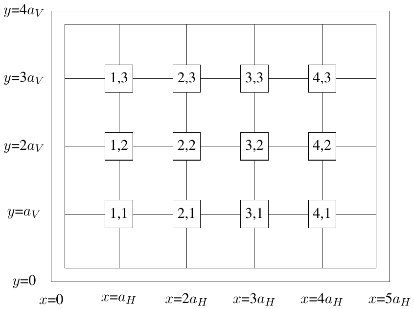
Así pues, podemos describir sus pequeñas oscilaciones transversales (fuera del plano del papel, en la dirección ) o bien mediante una matriz , o bien mediante una función
Usaremos (11.2) porque así podremos extender la discusión a sistemas continuos con más facilidad. Solo nos interesan las oscilaciones transversales de este sistema, en las que los bloques se mueven arriba y abajo fuera del plano del papel, porque esas oscilaciones no estiran mucho las cuerdas (solo a segundo orden en los desplazamientos pequeños). Las demás oscilaciones de un sistema así tienen frecuencias mucho más altas y están fuertemente amortiguadas, de modo que no son muy interesantes.
Como en el caso unidimensional, el primer paso es quitar las paredes y considerar el sistema infinito que se obtiene extendiendo el interior en todas las direcciones. Las oscilaciones del sistema resultante pueden describirse mediante una función , donde e no están restringidas.
Este sistema infinito tiene el mismo aspecto si se traslada verticalmente o horizontalmente. Podemos escribir soluciones para el sistema infinito usando dos veces nuestra discusión del caso unidimensional. Como el sistema tiene invariancia bajo traslación en la dirección , esperamos poder hallar autoestados de la matriz proporcionales a
para cualquier constante . Como el sistema tiene invariancia bajo traslación en la dirección , esperamos poder hallar autoestados de proporcionales a
para cualquier constante . Juntando (11.3) y (11.4), esperamos poder hallar autoestados de que tengan la forma
donde es el producto escalar bidimensional
Dicho de otro modo, el número de onda se ha convertido en un vector.
Igual que con el sistema unidimensional, podemos usar (11.5) para determinar la relación de dispersión del sistema infinito. Incluyendo la dependencia en , tenemos un desplazamiento de la forma
El análisis es exactamente análogo al de la cuerda unidimensional con cuentas, con el resultado de que es simplemente una suma de contribuciones vertical y horizontal, cada una de las cuales tiene el aspecto de la relación de dispersión del caso unidimensional:
Las ecuaciones (11.7) y (11.8) son la solución completa de las ecuaciones del movimiento de la malla infinita de cuentas.
Hasta aquí, nuestro análisis ha sido esencialmente el mismo en dos dimensiones que en una. El paso siguiente, sin embargo, es muy distinto. En el caso unidimensional, donde los modos normales son , solo hay dos modos con un valor dado de . Así, sean cuales sean las condiciones de contorno, solo tenemos que preocuparnos de superponer dos modos a la vez. Pero en el caso bidimensional hay un número continuamente infinito de soluciones de (11.8) para cualquier , porque se puede bajar y compensar subiendo . Así, un modo normal del sistema bidimensional finito sin amortiguamiento (que no es más que alguna solución en la que todas las cuentas oscilan en fase con la misma ) puede ser una combinación lineal de un número infinito de los bonitos y sencillos modos del sistema infinito invariantes bajo traslación.
En efecto, en general el caso bidimensional es infinitamente más difícil. Si la figura 11.1 fuera un sistema con una forma más complicada, no seríamos capaces de encontrar una solución analítica. Pero para el caso especial de un marco rectangular alineado con las cuentas, las condiciones de contorno no son tan malas, porque tanto los modos (11.5) como las condiciones de contorno pueden expresarse de forma sencilla en términos de productos de modos normales unidimensionales.
Las condiciones de contorno del sistema de la figura 11.1 son
donde
En el sistema infinito correspondiente, del que se muestra un fragmento en la figura 11.2, (11.9) implica que las cuentas a lo largo del rectángulo punteado están todas en reposo. Comparando la figura 11.1 y la figura 11.2, puede verse que esta condición de contorno recoge la física de las paredes de la figura 11.1.
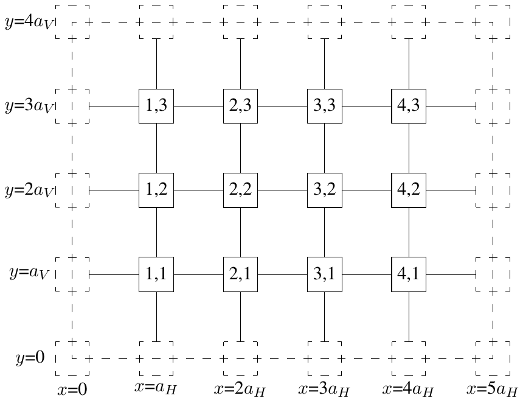
Ahora, para hallar los modos normales del sistema finito de la figura 11.1, debemos encontrar combinaciones lineales de modos del sistema infinito que satisfagan las condiciones de contorno (11.9). Podemos satisfacer (11.9) formando combinaciones lineales de solo cuatro modos del sistema infinito,1
donde
Entonces podemos tomar las soluciones como un producto de senos,
para a 4 y a 3.
La frecuencia de cada modo viene dada por la relación de dispersión (11.8):
Estos modos están animados en el programa 11-1.
La solución de este problema es un ejemplo de una técnica llamada «separación de variables». En las variables adecuadas —en este caso, e — el problema se descompone en problemas unidimensionales. Este truco funciona igual de bien en el caso continuo, siempre que la superficie de contorno sea rectangular. Si tomamos el límite en el que y son muy pequeñas comparadas con las longitudes de onda de interés, podemos expresar (11.8) en términos de cantidades que tengan sentido en el límite continuo, igual que en el análisis de la cuerda unidimensional continua como límite de la cuerda con cuentas, en el capítulo 6. Supongamos, por simplicidad, que
(de modo que las direcciones e tengan las mismas propiedades). Las cantidades que caracterizan la superficie en este caso son la densidad superficial de masa,
y la tensión superficial,
La tensión superficial es la fuerza por unidad de distancia transversal que ejerce la membrana. Cuando estas cantidades permanecen finitas al hacer tender a cero la separación , (11.8) se convierte en
Un argumento precisamente análogo al del caso unidimensional muestra que, en este límite, satisface la ecuación de ondas bidimensional,
Nótese que, en este límite, las propiedades especiales de los ejes e que se manifestaban en el sistema finito han desaparecido por completo de la ecuación del movimiento. Los números de onda y forman un vector bidimensional . El número infinito de soluciones de la relación de dispersión (11.18) son simplemente las que se obtienen rotando de todas las formas posibles sin cambiar su longitud. Esto hace posible resolver los modos normales en regiones circulares, por ejemplo. Pero no discutiremos ahora esas condiciones de contorno más complicadas. Está claro, sin embargo, que (11.13) es la solución para la región rectangular en el caso continuo, y que la frecuencia correspondiente es
Ahora, como el sistema es continuo, los enteros y van de cero a infinito (aunque no es interesante), o hasta que la aproximación continua deja de valer.
La malla de cuentas no puede extenderse a tres dimensiones porque no hay dirección transversal. Pero un sistema de masas conectadas por varillas elásticas sí puede ser tridimensional y, de hecho, ese tipo de sistema es un buen modelo de un sólido elástico. Este sistema es bastante más complicado porque cada masa puede moverse en las tres direcciones. En la figura 11.3 se ilustra una versión bidimensional. Este sistema es igual que el de la figura 11.1, salvo que las cuerdas se han sustituido por varillas elásticas ligeras, de modo que el sistema está en equilibrio incluso sin el marco. Ahora nos interesan las oscilaciones de este sistema en el plano del papel. Comparado con la figura 11.1, este sistema tiene el doble de grados de libertad, porque cada bloque puede moverse tanto en la dirección como en la , mientras que en la figura 11.1 los bloques solo se movían en la dirección . Esto significa que no podemos usar la invariancia bajo traslación espacial por sí sola ni siquiera para determinar los modos del sistema infinito.
Para cada valor de habrá cuatro modos en vez de los dos habituales. Tendríamos que hacer algún análisis matricial para ver qué combinaciones de movimiento en y en son realmente los modos normales. No lo haremos en general, pero lo discutiremos brevemente en el límite continuo, para recordarle algo de física que es importante en campos como la geología.
Considere el sistema continuo e infinito que se obtiene haciendo muy pequeñas las de la figura 11.3, escalando adecuadamente las demás cantidades. Considere una onda con número de onda . Los modos normales tendrán la forma
para algún vector (en el caso tridimensional, es un 3-vector; en nuestro ejemplo bidimensional, es un 2-vector). Si el sistema es invariante bajo rotaciones, entonces la física no destaca ninguna dirección salvo la de . Entonces los modos normales deben ser un modo longitudinal o «de compresión»,
y un modo transversal o «de cizalla»,
Cada modo tendrá su propia relación de dispersión característica. En tres dimensiones habrá dos modos de cizalla, porque hay dos direcciones perpendiculares, y tendrán la misma relación de dispersión, porque uno puede rotarse hasta convertirse en el otro.
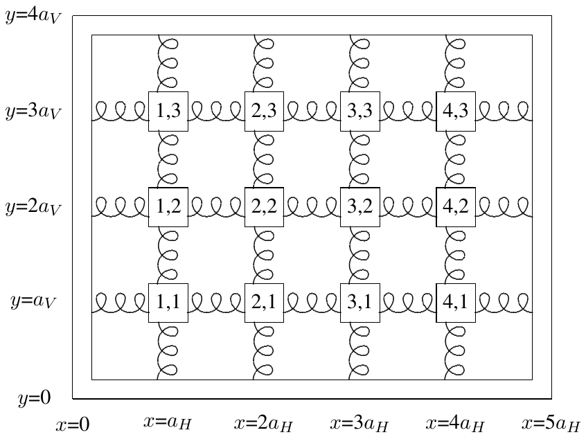
En un líquido o un gas no hay ondas de cizalla, porque no hay ninguna fuerza restauradora que mantenga al sistema en una forma determinada. Los modos de cizalla tienen frecuencia cero. Si sustituyéramos las varillas de la figura 11.3 por muelles sin estirar, obtendríamos un sistema con esa misma propiedad, mostrado en la figura 11.4. Sin el marco, este sistema no sería rígido. Sin embargo, los modos de compresión siguen ahí. Son análogos a las ondas sonoras. Para un sistema aproximadamente continuo, como el aire, esperamos una relación de dispersión de la forma
donde es constante mientras no sea demasiado grande. Ya hemos calculado , en (7.43), considerando oscilaciones unidimensionales. Se llama velocidad del sonido porque es la velocidad de las ondas sonoras en un sistema infinito o semiinfinito.
Podemos describir los modos normales de una caja rectangular llena de aire en términos de una función que describe la presión del gas en el punto . La presión o la densidad de la onda de compresión está relacionada con el desplazamiento por
Como en el sistema bidimensional descrito arriba, podemos usar separación de variables y hallar una solución que sea un producto de funciones de una sola variable. La única diferencia aquí es que las condiciones de contorno son distintas. Debido a (11.25), que es el enunciado matemático del hecho de que el gas es empujado de las regiones de presión alta a las de presión baja, el gradiente de presión perpendicular al contorno debe anularse: el gas del contorno no tiene a dónde ir. Así, los modos normales en una caja rectangular, , , , tienen la forma
con frecuencia
La solución trivial representa aire estacionario. Si alguna de las es no nula, el modo es no trivial.
Las ondas viajeras más fáciles de discutir en dos y tres dimensiones son las «ondas planas», soluciones del sistema infinito de la forma
Esto describe una onda que viaja en la dirección del vector de número de onda , con la velocidad de fase del medio. El desplazamiento (o lo que sea) es constante sobre planos de constante, que son perpendiculares a la dirección de movimiento, . Estudiaremos ondas viajeras más complicadas pronto, cuando discutamos la difracción. Entonces aprenderemos a describir «haces» de luz, de sonido o de otras ondas, que son las ondas viajeras con las que solemos trabajar, y veremos cómo describirlos como superposiciones de ondas planas. Por ahora, puede pensar en una onda plana como algo parecido a la onda viajera que encontraría dentro de un haz ancho y coherente, o muy lejos de una fuente pequeña de luz casi monocromática, luz de frecuencia definida. Con eso basta para hacerse una imagen física de los fenómenos que discutimos en esta sección.
Lo que más nos interesa son ondas como la luz y el sonido. Sin embargo, es mucho más fácil discutir las oscilaciones transversales de una membrana bidimensional, y muchos de nuestros ejemplos serán de ese sistema. Hay dos razones. Una es que una membrana bidimensional es más fácil de dibujar en un papel bidimensional. La otra es que la física es muy sencilla, así que podemos concentrarnos en las propiedades ondulatorias. Intentaremos señalar dónde se complican las cosas para otros tipos de fenómenos ondulatorios.
Considere dos membranas bidimensionales tensadas en el plano , como se muestra en la figura 11.5. Para , suponga que la densidad superficial de masa es y la tensión superficial . Para , suponga que la densidad superficial de masa es y la tensión superficial . Este es un análogo bidimensional del sistema de cuerdas que discutimos largamente en el capítulo 9. El contorno entre las dos membranas debe suministrar una fuerza (en este caso, una fuerza constante por unidad de longitud) en la dirección para sostener la diferencia de tensiones, como en el sistema de la figura 9.2. Sin embargo, supondremos que el mecanismo que suministra esa fuerza, sea cual sea, no tiene masa, no tiene fricción y es infinitamente flexible.
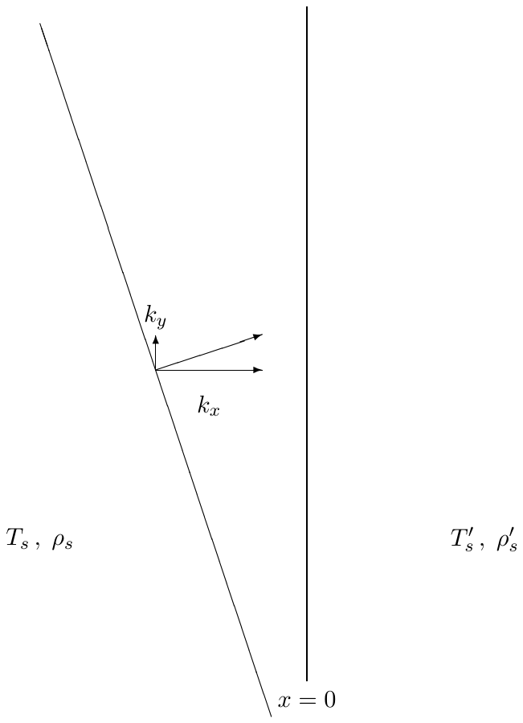
Ahora, de nuevo, podemos considerar la reflexión de ondas viajeras. Supongamos que hay, en esta membrana, una onda plana de amplitud y número de onda para , que viaja hacia el contorno en . La condición de que la onda viaje hacia el contorno puede escribirse en términos de las componentes de como
Nos gustaría saber qué ondas produce esta onda incidente por reflexión y transmisión en el contorno . Por razones generales de invariancia bajo traslación espacial, esperamos que la solución tenga la forma
con
y
Los índices y de (11.30) recorren todas las ondas transmitidas y reflejadas. Mostraremos en breve que solo una de cada contribuye para una condición de contorno plana en , pero (11.30) es completamente general y se sigue únicamente de la invariancia bajo traslación espacial. Nótese que hemos incluido las condiciones de contorno en exigiendo (11.29) y (11.32). Salvo la onda incidente de amplitud , todas las demás ondas se alejan del contorno. Pero todavía no hemos impuesto la condición de contorno en .
Por lo que sabemos de la física en , las ondas reflejada y transmitida podrían ser una superposición complicada de un número infinito de ondas planas que se alejan del contorno en distintas direcciones. De hecho, si el contorno tuviera una forma irregular, eso es exactamente lo que esperaríamos. Es el hecho de que el contorno, , sea él mismo invariante bajo traslaciones espaciales en la dirección lo que nos permite reducir el número infinito de parámetros de (11.30) a solo dos. Como las traslaciones en la dirección dejan invariante todo el sistema, incluido el contorno, podemos hallar soluciones en las que todas las componentes tengan la misma dependencia irreducible en . Si la onda incidente es proporcional a
entonces todas las componentes de (11.30) deben ser también proporcionales a . De lo contrario, no hay manera de satisfacer la condición de contorno en para todo . Eso significa que
Pero (11.34), junto con (11.31) y (11.32), determina completamente los vectores de onda y . Entonces (11.30) se convierte en2
donde
y
con
Lo entretenido de (11.35)-(11.37) es que sabemos todo sobre las direcciones de las ondas reflejada y transmitida sin haber mencionado siquiera los detalles de la física del contorno. Para obtener las direcciones solo hemos necesitado la invariancia bajo traslaciones en la dirección . Los detalles de la física del contorno solo entran cuando queremos calcular y . Las direcciones de las ondas reflejada y transmitida son las mismas para cualquier sistema con un contorno invariante bajo traslación. Evidentemente, este argumento funciona también en tres dimensiones. De hecho, si simplemente elegimos las coordenadas de modo que el contorno sea el plano y la onda viaje en el plano -, entonces nada depende de la coordenada y el análisis es exactamente el mismo que arriba. Podemos, por ejemplo, aplicar estos argumentos directamente a las ondas electromagnéticas. Para las ondas electromagnéticas en un medio transparente, como la velocidad de fase es , el índice de refracción, , es proporcional a :
(11.36)-(11.37) muestran que la onda reflejada sale con el mismo ángulo que la incidente, porque la única diferencia entre los vectores de la onda incidente y la reflejada es un cambio de signo de la componente . Así, el ángulo de incidencia es igual al ángulo de reflexión: es la regla de la «reflexión especular». De (11.36) podemos deducir también la ley de refracción de Snell para el ángulo de la onda refractada. Si es el ángulo que forma la onda incidente con la perpendicular al contorno, y es el ángulo correspondiente de la onda transmitida, entonces (11.36) implica
Para ondas electromagnéticas, podemos reescribir esto como
Por ejemplo, cuando una onda electromagnética que viaja por el aire encuentra una superficie plana de vidrio con un ángulo , se cumple en (11.41): la onda se refracta acercándose a la perpendicular a la superficie. Esto se ilustra en la figura 11.6 para .
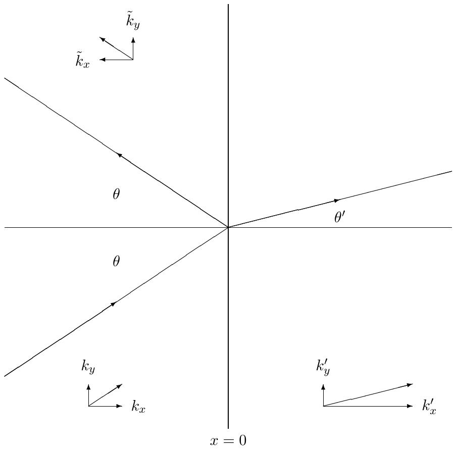
Terminemos ahora la solución del problema de la membrana resolviendo para y en (11.35). Para ello debemos discutir por fin las condiciones de contorno con más detalle. Una es que la membrana es continua, lo que, dada la forma (11.35), implica
o sea,
La otra es que la fuerza vertical sobre cualquier trocito de la membrana es nula. La fuerza sobre un trocito de longitud del contorno en el punto , ejercida por la membrana con , viene dada por
Esto es análogo al ejemplo unidimensional ilustrado en la figura 8.6. La fuerza de tensión superficial es perpendicular al contorno, así que, para desplazamientos pequeños, solo importa la pendiente del desplazamiento en la dirección . La pendiente en la dirección no contribuye a la fuerza vertical a primer orden en el desplazamiento. Análogamente, la fuerza sobre un trocito de longitud del contorno en el punto , ejercida por la membrana con , viene dada por
Así, la otra condición de contorno es
o sea,
Así, la solución es
donde
De (11.48) y (11.49) puede verse que podemos ajustar la tensión superficial para que la onda reflejada desaparezca, incluso cuando hay un cambio en la longitud del vector de un lado a otro del contorno. Conviene pensar en la refracción en este límite, porque permite visualizarla de forma sencilla. Si en (11.48), entonces y : no hay onda reflejada y la transmitida tiene la misma amplitud que la incidente. Así, en cada región hay una única onda plana. Recuerde que una onda plana consiste en líneas infinitas de fase constante perpendiculares al vector , que se mueven en la dirección de con la velocidad de fase . En particular, fijémonos en las líneas donde la fase es cero, de modo que . La distancia perpendicular entre dos de esas líneas es la longitud de onda, , porque la diferencia de fase entre líneas vecinas es . Pero he aquí la clave: las líneas de las dos regiones deben encontrarse en el contorno, , para satisfacer la condición de contorno (11.43). Si la amplitud de la onda incidente es 1 en , la de la onda saliente también es 1. Las líneas donde son continuas a través del contorno . Esta situación se ilustra en la figura 11.7, donde se muestran los vectores de las dos regiones. Nótese que el ángulo de las líneas debe cambiar cuando cambia la distancia entre ellas, para mantener la continuidad en el contorno. En el programa 11-2 se muestra el mismo sistema en movimiento.
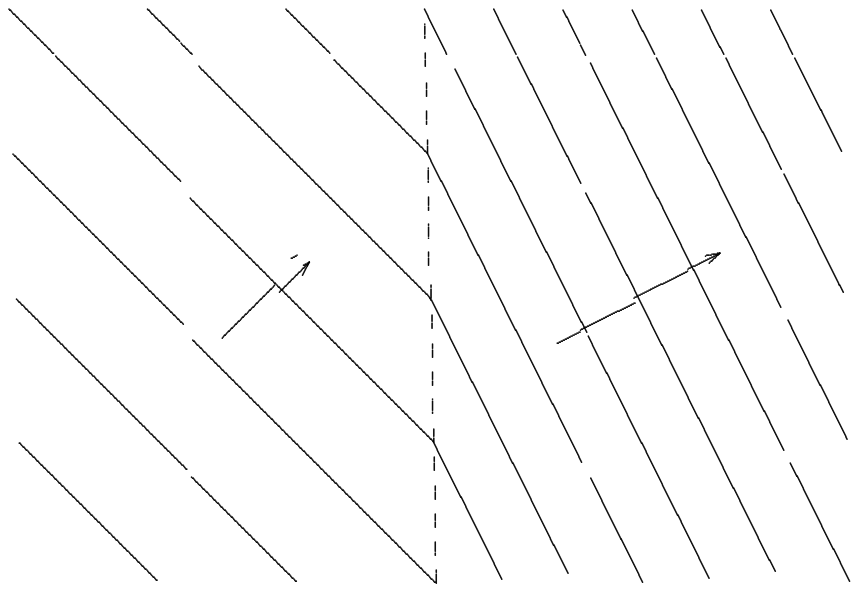
El índice de refracción no trivial del vidrio es el ladrillo con que se construyen muchos elementos ópticos. Discutamos el prisma. En realidad, resolver del todo correctamente el problema de la dispersión de ondas luminosas por prismas requeriría técnicas mucho más sofisticadas de las que tenemos ahora a nuestra disposición. La razón es que el prisma no es una superficie plana e infinita con invariancia bajo traslación espacial; en general, tendríamos que preocuparnos del contorno. Sin embargo, podemos decir cosas interesantes incluso ignorando esta complicación. La idea es pensar no en una onda plana infinita, sino en un haz ancho de luz que incide sobre una cara del prisma. Un haz ancho se comporta de forma muy parecida a una onda plana, e ignoraremos la diferencia en este capítulo. Veremos cuáles son las diferencias en el capítulo 13, cuando discutamos la difracción.
Consideremos, pues, la siguiente situación, en la que un haz ancho de luz entra por una cara de un prisma de índice de refracción y sale por la otra. La geometría se muestra en la figura 11.8 (las direcciones de los haces se indican con las líneas gruesas). La cantidad interesante es , que describe cuánto ha desviado el prisma la dirección del haz saliente respecto de la del incidente. Podemos calcularla con geometría sencilla y la ley de Snell, (11.40). De la ley de Snell,
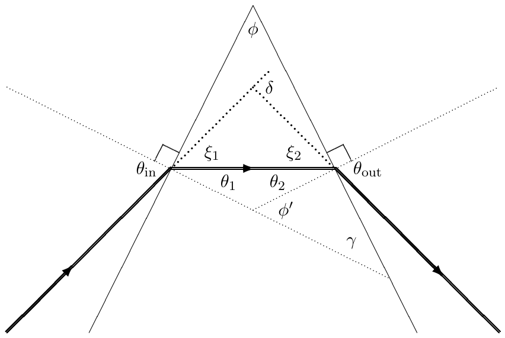
Y ahora, algo de geometría:
—porque el complemento de , es decir , junto con y son los ángulos de un triángulo y, por tanto, suman —, y
—porque y son ángulos correspondientes de los dos triángulos rectángulos semejantes cuyo otro ángulo agudo es . Así,
donde hemos usado (11.52) y (11.53). Pero, para ángulos pequeños, de (11.50) y (11.51),
Así,
El resultado (11.56) es sin duda razonable. Debe anularse cuando , porque para no hay contorno. Y si las cosas son pequeñas y la respuesta es lineal, debe ser proporcional a .
Una de las características más familiares de un prisma es consecuencia de la dependencia del índice de refracción, , con la frecuencia. Eso hace que un haz de luz blanca se descomponga en colores. Para la mayoría de los materiales, el índice de refracción aumenta con la frecuencia, de modo que la luz azul se desvía más que la roja. La física de la dependencia de con la frecuencia es la de la oscilación forzada. El índice de refracción de un material está relacionado con la constante dieléctrica (véase (9.53)), que a su vez está relacionada con la distorsión de la estructura electrónica del material causada por el campo eléctrico. Para un campo variable, esto depende de la amplitud del movimiento de las cargas ligadas dentro del material en un campo eléctrico. Como esas cargas están ligadas, responden a los campos oscilantes de una onda electromagnética como una masa en un muelle sometida a una fuerza oscilante. Sabemos, de nuestro estudio de la oscilación forzada, que esa amplitud tiene la forma
donde son las frecuencias de resonancia del sistema y las son constantes que dependen de los detalles de cómo actúa la fuerza sobre los grados de libertad.
Podemos estimar el orden de magnitud de estas frecuencias de resonancia por análisis dimensional, recordando que cualquier material consta de electrones y núcleos unidos por fuerzas eléctricas (y por la mecánica cuántica, claro, aunque no entrará en nuestra estimación salvo implícitamente, en la distancia atómica típica). Las cantidades relevantes son:3
| Magnitud | Valor |
|---|---|
| Carga del protón | C |
| Masa del electrón | kg |
| Distancia atómica típica | m = 1 Å |
| Velocidad de la luz | m/s |
En términos de estos parámetros, cabe suponer que la fuerza típica dentro de los materiales es del orden de (por la ley de Coulomb) y, por tanto, que la constante del muelle es del orden de (la fuerza típica dividida por la distancia típica). Así, esperamos
y
Esta es una longitud de onda en la región ultravioleta del espectro electromagnético, más corta que la de la luz visible. Eso significa que, para la luz visible, y, por tanto, el desplazamiento (11.57) aumenta al aumentar dentro del visible. La distorsión de la estructura electrónica del material causada por un campo eléctrico variable aumenta con la frecuencia en el espectro visible. Así, la constante dieléctrica del material aumenta con la frecuencia y, en consecuencia, la luz azul se desvía más.
Dicho sea de paso, esta es la misma razón por la que el cielo es azul: la luz azul se dispersa más que la roja porque su frecuencia está más cerca de las resonancias importantes de las moléculas del aire.
La situación en la que la onda viene de una región de grande a una región de menor tiene otra característica sorprendente y muy útil. Esta situación se representa en la figura 11.9 para un sistema sin reflexión. Para pequeña, como se muestra en la figura 11.9, esto se parece bastante a la figura 11.7, salvo que la onda se refracta alejándose de la perpendicular a la superficie en vez de acercarse a ella. Pero suponga que el ángulo es grande y satisface
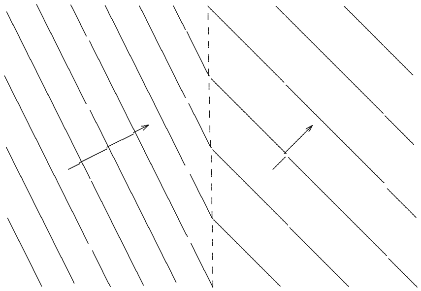
Entonces no hay solución con real en (11.41). Así pues, no puede haber onda viajera transmitida: la onda incidente debe ser totalmente reflejada por el contorno. Esto es la reflexión total interna. Ocurre cuando una onda plana intenta escapar de una región de alto a una región de menor con un ángulo rasante. Se usa mucho en equipos ópticos y en muchas otras cosas. Investiguemos este curioso fenómeno con más detalle.
Suponga que partimos de y aumentamos . Al aumentar , aumenta y disminuye. Esto continúa hasta llegar a la frontera de la reflexión total interna, llamada ángulo crítico,
Las amplitudes de las ondas reflejada y transmitida de (11.48) también aumentan. En el ángulo crítico, se anula: la amplitud de la onda reflejada es 1 y la de la transmitida es 2. Sin embargo, aunque la onda transmitida es no nula, no se lleva energía del contorno, porque el vector apunta en la dirección .
Al aumentar más allá del ángulo crítico, sigue creciendo. Para satisfacer la relación de dispersión,
¡ debe ser imaginario puro! La dependencia en es entonces proporcional a
Ahora cambia la naturaleza de la condición de contorno en el infinito. Ya no podemos exigir simplemente que . En su lugar, debemos exigir
El signo es importante. Si fuera negativa, la amplitud de la onda para crecería con , yendo exponencialmente a infinito cuando . Eso no tiene mucho sentido físico, porque corresponde a una causa finita (la onda incidente para ) produciendo un efecto infinito. Como veremos más abajo, también podemos llegar a esta conclusión tomando este sistema infinito como límite de un sistema finito.
En realidad tenemos tres condiciones de contorno distintas en el infinito para esta situación:
Estas tres pueden combinarse en una condición compuesta válida en todos los regímenes:
La condición (11.67) es en realidad el enunciado más general de la condición de contorno de onda viajera saliente en el infinito. Es correcta también en situaciones en las que hay amortiguamiento y tanto la parte real como la imaginaria de son no nulas. Es el enunciado matemático del hecho físico de que la onda para , sea cual sea su forma, la produce en el contorno la onda incidente.
De (11.48) y (11.49) se ve que, para , la amplitud de la onda reflejada se vuelve compleja. Sin embargo, su valor absoluto sigue siendo 1: toda la energía de la onda incidente se refleja.
Hemos visto que, en la reflexión total interna, la onda sí penetra en la región prohibida, pero la dependencia en tiene la forma de una onda estacionaria exponencial, no de una onda viajera. La dependencia en es la de una onda viajera. Esta es una de las muchas situaciones en las que la física obliga a que la solución bidimensional o tridimensional tenga propiedades distintas en direcciones distintas.
Es fácil ver la reflexión total interna en un acuario, un bloque de vidrio u otro objeto transparente rectangular con índice de refracción bastante mayor que 1. Puede mirar a través de una cara del rectángulo y ver el reflejo plateado desde una cara adyacente, como se ilustra en la figura 11.10.
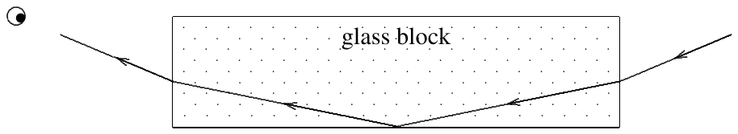
Considere la dispersión de una onda plana en el sistema ilustrado en la figura 11.11. Es el mismo montaje que en la figura 11.10, salvo que se ha añadido otro bloque de vidrio a una distancia pequeña, , por debajo del contorno en el que había reflexión total interna. Hemos definido la dirección positiva hacia abajo por coherencia con la discusión de la ley de Snell de más arriba. ¿Llega ahora algo de luz al observador de abajo, o la luz sigue reflejándose totalmente en el contorno, como en la figura 11.10? La respuesta es que algo de luz pasa. Como veremos en detalle en un ejemplo más abajo, la presencia del otro bloque de vidrio significa que, en vez de una condición de contorno en el infinito, tenemos una condición de contorno a la distancia finita .
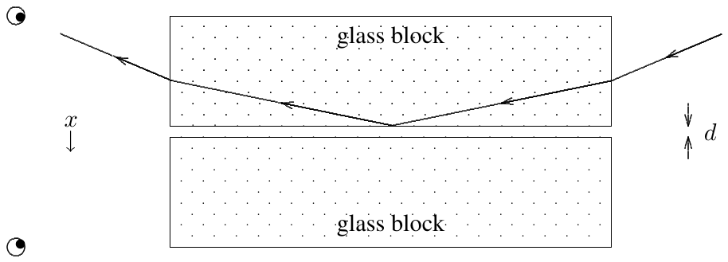
Los detalles de este fenómeno para ondas electromagnéticas se complican algo por la polarización, que discutiremos en detalle en el capítulo siguiente. Sin embargo, hay un proceso precisamente análogo en la oscilación transversal de membranas que podemos analizar con facilidad. De hecho, veremos que ya lo hemos analizado en el capítulo 9.
Considere el problema de dispersión ilustrado en la figura 11.12. La región sin sombrear es una membrana de densidad menor. Las flechas indican las direcciones de los vectores de las ondas planas. Las regiones sombreadas tienen densidad superficial de masa y tensión superficial . La región sin sombrear, que va de a , tiene la misma tensión superficial pero densidad superficial de masa . Así, la razón entre las velocidades de fase de las dos regiones es dos, la misma que la razón entre el aire y el vidrio en la figura 11.11. Las líneas discontinuas son contornos sin masa entre las distintas membranas.
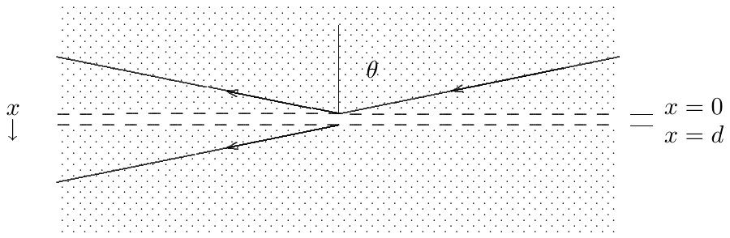
Podemos preguntarnos ahora cuáles son los coeficientes y de reflexión y transmisión. Hemos hecho este problema para un solo contorno antes en este capítulo, en (11.42)-(11.49). Podríamos resolver este juntando dos de esas soluciones con las técnicas de matriz de transferencia del capítulo 9. De hecho, ni siquiera tenemos que hacer eso, porque podemos leer el resultado de (9.97) y (9.98), en la discusión de las películas delgadas del capítulo 9. La cuestión es que todos los términos de nuestra solución deben tener la misma dependencia irreducible en , , por la invariancia bajo traslación espacial de todo el sistema, incluido el contorno, en la dirección . Ese factor común no juega ningún papel en las condiciones de contorno. Si lo sacamos factor común, lo que queda parece un problema de dispersión unidimensional. Comparando (11.47) para con (9.10), se ve que los análisis coinciden si hacemos los reemplazos
donde es la componente del vector de la onda incidente en la región sombreada y es la componente del vector de la onda transmitida en la región sin sombrear. El resultado es
y
Puede ser un poco más fácil mirar la intensidad de la onda transmitida, que es proporcional a
Nótese que no hemos mencionado el ángulo crítico, ni la reflexión total interna, ni nada por el estilo. La razón es que nuestro análisis del capítulo 9 era perfectamente general. Sigue siendo correcto incluso si el número de onda angular de la región intermedia se vuelve imaginario. Todo lo que ocurre para mayor que el ángulo crítico, , es que se vuelve imaginario. Pero eso tiene un efecto espectacular en (11.71). Si , con real, se sigue de la identidad de Euler, (1.57) y (1.62), que
donde es el «seno hiperbólico», definido por
Así, para ángulos por encima del crítico, el denominador de (11.71) es una función exponencialmente creciente de (el término de (11.73) domina para grande). La intensidad de la onda transmitida decrece, por tanto, exponencialmente con . En el límite de grande recuperamos rápidamente la reflexión total interna.
Podemos entender algo mejor lo que ocurre mirando las condiciones de contorno en para ángulos por encima del crítico. Para , la onda tiene la forma (suprimiendo los factores comunes y )
Para , la onda tiene la forma
donde he llamado a los coeficientes y por analogía con las ondas transmitida y reflejada, aunque no son ondas viajeras. Las condiciones de contorno en son
Esto parece más complicado de lo que es. Si despejamos y en términos de , el resultado es
Lo importante es que los valores de las dos componentes de la onda (11.75) en , es decir, y , son más o menos del mismo tamaño. Estas dos cantidades no tienen ninguna dependencia exponencial en . Este hecho cualitativo no depende de los detalles de (11.76): será cierto para cualquier condición de contorno razonable en .
Así pues, el coeficiente de la onda «reflejada» (entre comillas, porque es una onda exponencial real, no una onda viajera) debe ser menor que la «transmitida» en un factor de aproximadamente . Nótese que esto justifica el enunciado (11.67) de la condición de contorno en el infinito. Cuando , para cualquier física razonable en , la onda se convierte en una exponencial negativa pura.
En , para grande, el término de la onda será completamente despreciable, y el término se producirá con algún coeficiente del orden de 1, igual que en el límite de reflexión total interna.
Así, lo que ocurre en las condiciones de contorno del efecto túnel puede describirse cualitativamente así: la onda incidente para produce el término en la región , con una mezcla exponencialmente pequeña de . Pero en las dos partes de la onda exponencial son del mismo tamaño (ambas exponencialmente pequeñas), y pueden producir la onda transmitida.
La rápida dependencia exponencial de la onda transmitida con tiene consecuencias interesantes. Implica, por ejemplo, que la onda reflejada es también muy sensible al valor de para pequeña (la conservación de la energía implica ). Puede ver esta rápida dependencia en el ejemplo de la figura 11.10 poniendo el dedo sobre la superficie inferior del bloque de vidrio o del acuario, donde la onda se está reflejando. ¡Verá una huella dactilar fantasmal! La razón es que las minúsculas hendiduras de su dedo están lo bastante lejos del vidrio como para que sea grande y la onda se refleje casi por completo. Pero donde la carne se aprieta firmemente contra el vidrio, la onda se absorbe. Es una versión sencilla de un microscopio de efecto túnel.
Por último, antes de dejar el tema del efecto túnel, consideremos qué ocurre cuando bajamos la intensidad de la onda luminosa de la figura 11.11 hasta ver la dispersión de fotones individuales. Lo primero que hay que notar es que cada fotón o bien se transmite o bien se refleja. El significado de y en este caso es que y son las probabilidades de reflexión y transmisión. No se puede predecir si un fotón concreto pasará. En el mundo mecanocuántico solo se pueden predecir probabilidades.
Lo segundo que hay que notar es que, en la descripción de partículas, todo el fenómeno del efecto túnel es muy peculiar. Un fotón clásico que llegara al contorno de la placa de vidrio con más del ángulo crítico no podría entrar en absoluto en el aire: se lo impedirían la conservación de la energía y la conservación de la componente del momento.4 ¿Cómo puede la partícula llegar al lado si no puede existir para ? Evidentemente, en física clásica no puede. El efecto túnel es, por tanto, un fenómeno genuinamente mecanocuántico. La onda consigue penetrar en la región prohibida, pero solo en forma de onda exponencial real, no de onda viajera. Solo para y , donde las ondas son viajeras, pueden interpretarse como partículas en algo parecido al sentido clásico.
Las placas de Chladni son un ejemplo muy bonito e instructivo de sistema oscilante bidimensional. Una placa de Chladni no es más que una placa metálica cuadrada que se excita transversalmente en su centro. Se ilustra en la figura 11.13. El punto del centro muestra dónde se excita la placa en la dirección transversal (fuera del plano del papel). El centro, cuya posición de equilibrio tomaremos como , se mueve arriba y abajo fuera del plano del papel con frecuencia . Supongamos que el cuadrado está en el plano - y tiene lado , y llamemos al desplazamiento transversal (en la dirección )
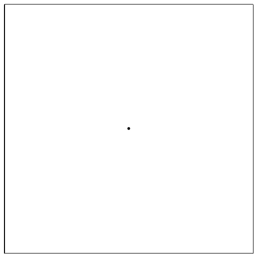
En principio, este es un problema de oscilación forzada. Podríamos tomar como condición de contorno en el origen
e intentar hallar en todas partes.
Para hallar debemos conocer la condición de contorno en los bordes de la placa. Eso depende de los detalles de la física de la placa, porque hay varias maneras en que la placa puede deformarse en respuesta a la fuerza impulsora. Por simplicidad, supondremos que la deformación dominante es la cizalla, ilustrada en la figura 11.14. Para este tipo de desplazamiento, y para evitar una aceleración infinita, la pendiente de la placa debe anularse en el contorno en la dirección perpendicular al contorno, o sea, en lenguaje matemático,
en el borde, donde es un vector unitario en el plano perpendicular al borde. En este caso,
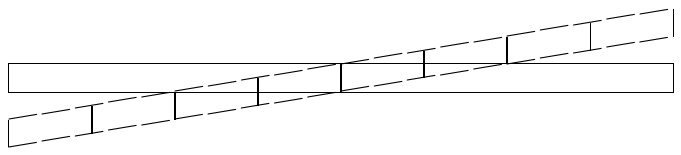
Aunque el caso general es más complicado que esto, usaremos (11.81) como ilustración. Lo instructivo de las placas de Chladni, como veremos, no es lo que ocurre en los bordes, ¡sino lo que ocurre en el medio!
No es fácil escribir la solución general de este problema de oscilación forzada. Sin embargo, nos interesan sobre todo las resonancias. Son los modos de oscilación libre de la placa (sujetos a la condición de contorno (11.81)) que pueden ser excitados por la fuerza impulsora, es decir, los modos que tienen valores no nulos del desplazamiento en el origen.
Los modos de oscilación libre relevantes de la placa tienen la forma5
con
Si las frecuencias de estos modos fueran únicas, (11.82) sería toda la historia. Pero lo interesante de este sistema es que la simetría garantiza que hay degeneración: si , hay dos modos con la misma frecuencia. Obtenemos un modo físicamente equivalente intercambiando , porque eso corresponde simplemente a una rotación de 90° de la placa, ¡que no cambia la física en absoluto! Cuando hay modos degenerados, las combinaciones lineales de ellos son también modos, como se muestra en (3.117). Así que tenemos que preguntarnos qué combinaciones lineales excita la fuerza impulsora. Otra forma de decir esto se resume en (11.83): la invariancia bajo rotaciones asegura que depende solo de . En particular, está claro que la diferencia
se anula en el origen. ¡Solo la suma se acopla a la fuerza impulsora!
Estos son los modos resonantes de una placa de Chladni.
Una razón por la que esto resulta divertido es que es fácil de ver. Si se excita la placa y se espolvorea arena sobre ella, la arena se acumula en las regiones donde la placa no se mueve, a lo largo de los nodos de desplazamiento donde . Así obtenemos una imagen visual de los ceros de .
Miremos algunos de estos modos (en orden de frecuencia creciente) para ver qué esperar. El modo no es interesante: corresponde a toda la placa subiendo y bajando en bloque. Obviamente, la frecuencia correspondiente es 0, porque no hay fuerza restauradora.
El primer modo interesante es
Este se anula para , de modo que el patrón de arena de Chladni tiene el aspecto del diagrama de la figura 11.15.
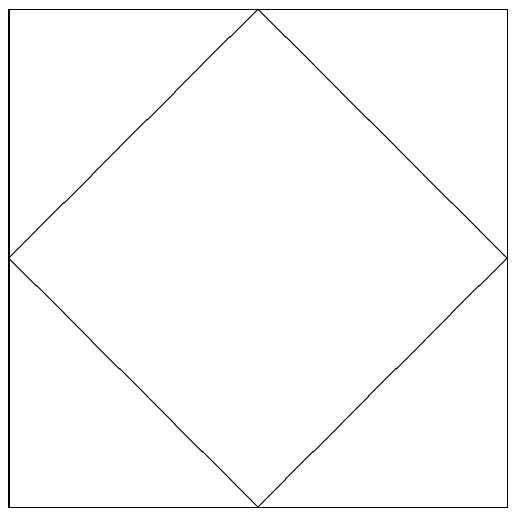
El modo siguiente es
Como este modo no es degenerado, no da lugar a un patrón muy interesante. Se anula en e , lo que da el patrón mostrado en la figura 11.16. No consideraremos más de estos modos aburridos con .
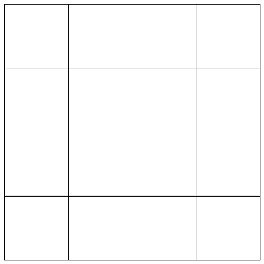
El siguiente modo es
que se anula para o , de modo que el patrón tiene el aspecto de la figura 11.17.
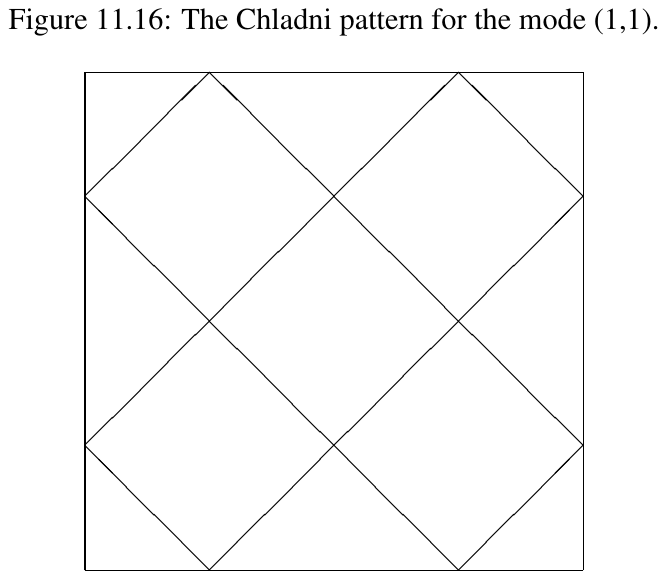
A continuación viene
Este se anula para
con y . El patrón se muestra en la figura 11.18.
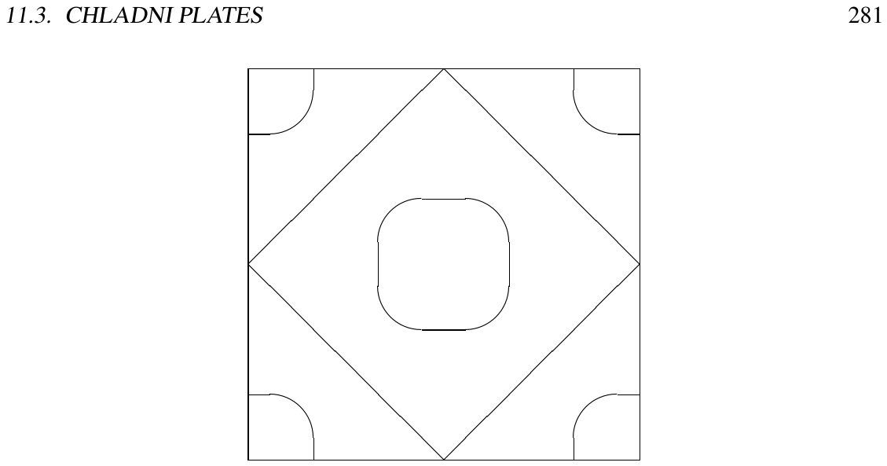
Podríamos seguir, pero a estas alturas ya debería tener la idea. Veamos un último modo:
que se anula para
con el patrón mostrado en la figura 11.19.
Moraleja: cuando hay más de un modo con la misma frecuencia, ¡mire las combinaciones lineales para determinar cuáles se excitan!
En general, una «guía de ondas» es un dispositivo que obliga a una onda viajera a propagarse solo por donde uno quiere. Típicamente, una guía de ondas es algún tipo de tubo que permite a la perturbación ondulatoria propagarse en una dirección mientras la confina en las otras. En esta sección discutiremos el caso de guías de onda rectas con secciones transversales uniformes sencillas. La física realmente interesante ocurre cuando la anchura de la guía no es mucho mayor que la longitud de onda. Entonces, como veremos, la física de la guía tiene un efecto espectacular sobre la propagación de la onda.
La situación más sencilla de discutir es la de las oscilaciones transversales de una membrana en forma de banda infinita, como se muestra en la figura 11.20. Considere una membrana con densidad superficial de masa y tensión superficial , tensada en una banda infinita en el plano - entre e , y desde hasta . Los bordes, en e , se mantienen fijos en el plano. Nos interesan las oscilaciones del interior de la banda hacia arriba y hacia abajo, fuera del plano.
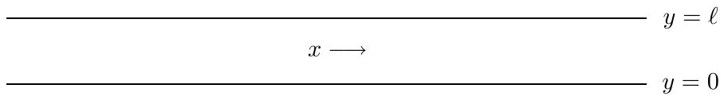
Este es un trabajo para la separación de variables. Podemos buscar modos de este sistema que sean productos de una función de por una función de . En particular, podemos satisfacer la condición de contorno en combinando dos modos del sistema infinito,
para formar
Esto satisface la condición de contorno en si
Así, los modos tienen este aspecto:
y
Para cada valor de , ¡estos parecen ondas que viajan en la dirección !
La relación de dispersión de la membrana viene dada por (11.18). Pero los modos tienen . Así, la relación de dispersión de las ondas viajeras (11.99) y (11.100) es
donde
y
Algo interesante de (11.101) es que la relación de dispersión tiene una frecuencia de corte inferior que depende de . Para un dado, los únicos modos que se propagan realmente son el número finito de modos con
Por ejemplo, para no hay ondas viajeras. Para solo hay una, la correspondiente a , etc.
Los modos que satisfacen (11.104) tienen una interpretación física sencilla. Pueden pensarse como las ondas planas (11.96) del sistema infinito rebotando de un lado a otro entre los bordes fijos, e . El requisito (11.98) sobre los valores permitidos de surge porque, para otros valores de , las ondas reflejadas se desfasan y dan interferencia destructiva. Cabría esperar que una onda en zigzag de este tipo se propagara en la dirección con una velocidad menor que la velocidad de fase, , de las ondas del sistema infinito, en un factor de
porque tiene que recorrer esa distancia de más al rebotar para avanzar una distancia dada en , como se ilustra en la figura 11.21. De hecho, la velocidad de fase de las ondas en zigzag para fijo, , es en realidad mayor que por el factor (11.105), en vez de menor:
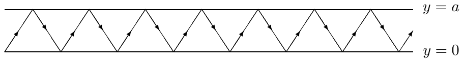
Sin embargo, la velocidad de grupo, , de las ondas en zigzag —la velocidad a la que realmente se pueden enviar señales— es menor justamente por el factor esperado:
Para ondas luminosas podemos hacer una guía de ondas construyendo un tubo de algún material conductor, de modo que el campo eléctrico sea no nulo solo dentro del tubo. Sin embargo, en ese caso los detalles de las condiciones de contorno en los bordes dependen de la dirección del campo eléctrico. Volveremos a una cuestión relacionada en el capítulo siguiente.
El agua es una sustancia bastante complicada. Moja las cosas. Tiene viscosidad. Forma remolinos y torbellinos y tiene movimientos turbulentos no lineales que no podemos aspirar a entender con las técnicas de que disponemos. En esta sección consideramos un fluido algo idealizado, que llamaremos «agua seca» (siguiendo a Feynman), que no tiene nada de esa estructura complicada. Tiene tres características que mantendremos en común con la de verdad: tiene densidad de masa, tiene tensión superficial y es casi incompresible. Veamos cómo ondula.
Imagine un universo infinito lleno de un líquido incompresible y sin fricción. Esto nos permitirá ver las consecuencias de la incompresibilidad de forma sencilla y cualitativa. Considere el análogo de una onda sonora plana en un sistema así. Es decir, por ejemplo, una onda plana que viaja en la dirección (con ) con desplazamientos longitudinales en la dirección . Si el líquido es verdaderamente incompresible, debe ser cero para esta onda, porque cualquier desplazamiento longitudinal debe ir acompañado de compresiones y enrarecimientos del medio. Así, para una onda plana así, : ¡no hay ondas planas no triviales en el sistema infinito!
En general, no esperamos que todas las componentes del vector tengan que anularse, porque incluso en un líquido incompresible el desplazamiento en una dirección está permitido si va acompañado del movimiento adecuado en otras direcciones. Pero lo que hemos visto es que no podemos tener un modo con un vector real. Eso sería una onda plana, que hemos visto que no es compatible con la incompresibilidad. En su lugar, esperamos que la restricción se sustituya por una restricción sobre la longitud, invariante bajo rotaciones, del vector : que . Si algunas de las componentes del vector son imaginarias, esto puede satisfacerse con no nulo.
Nótese que la condición no es exactamente una relación de dispersión, porque no hace referencia alguna a la frecuencia. Pero es toda la historia para un sistema infinito de fluido incompresible. De hecho, está claro que no hay ondas armónicas en el sistema infinito, porque no hay nada que produzca una fuerza restauradora. Incluso si hay un campo gravitatorio, la presión del líquido se ajusta para cancelar el efecto de la gravedad. Solo podemos obtener una relación de dispersión no trivial cuando hay una superficie. La relación de dispersión depende entonces de la física de la superficie. Esto parecería violar nuestro principio general de que la relación de dispersión es una propiedad del sistema infinito. Lo que ocurre es esto: la relación es realmente la única relación de dispersión que tiene algún sentido para el sistema infinito tridimensional. Cuando introducimos una superficie, hemos roto la invariancia bajo traslación en la dirección normal a la superficie. Eso nos permite obtener una relación de dispersión no trivial para el sistema bidimensional paralelo a la superficie.
Intentemos ahora hacer cuantitativas estas consideraciones. Como de costumbre, etiquetaremos nuestro fluido por las posiciones de equilibrio de sus partes. Llamemos entonces al desplazamiento respecto del equilibrio del fluido que está en el punto en equilibrio
para algún pequeño. Esto significa que la posición real del agua es6
Podemos considerar (11.109) como una especie de cambio de coordenadas. Nos lleva de las coordenadas de equilibrio (una etiqueta más bien arbitraria, porque el agua es libre de fluir) a las coordenadas físicas, que nos dicen dónde está realmente el agua. Si el agua es incompresible, lo cual es una aproximación bastante buena, un elemento de volumen pequeño debe tener el mismo volumen en equilibrio y en las coordenadas físicas:
Esto se cumplirá si el determinante de la matriz jacobiana vale 1:
Como es pequeño, podemos desarrollar (11.111) a orden más bajo en , con el resultado
Así,
(11.113) es muy razonable: es el enunciado de que el flujo de desplazamiento hacia dentro o hacia fuera de cualquier región se anula.7 Esto es lo que esperábamos de nuestra discusión cualitativa.
Para ver qué significa esto para las ondas, supongamos además que no hay remolinos. El enunciado matemático de esto es
Si no suponemos (11.114), la conservación del momento angular se vuelve importante y la vida se complica muchísimo. Tendrá que esperar a cursos de dinámica de fluidos para aprender más sobre ello. Con la simplificación (11.114), el desplazamiento puede escribirse como el gradiente de una función escalar, :
Esto simplifica enormemente la vida, porque ahora podemos trabajar con la cantidad escalar . La invariancia bajo traslación espacial nos dice que podemos hallar modos de la forma
lo que da un desplazamiento de la forma
La condición (11.113) se convierte entonces en
como anticipamos en la discusión cualitativa del principio de la sección.
Consideremos ahora ondas en un «océano» de profundidad , ignorando las fuerzas de fricción, los remolinos y las no linealidades. Restringiremos además nuestra atención a una situación bidimensional. Sea la dirección vertical y consideremos ondas en el agua en la dirección . Es decir, tomaremos real, porque nos interesa la propagación de ondas en la dirección , y imaginario puro con la misma magnitud, de modo que se satisfaga (11.118). Suponemos entonces que nada depende de la otra coordenada, . Habiendo simplificado tanto las cosas, podemos suponer también que nuestro océano es una caja rectangular. Entonces los modos de interés del sistema infinito tienen el aspecto
Si el océano tiene un fondo en , entonces el desplazamiento vertical debe anularse en . Entonces (11.115) implica que debemos combinar modos del sistema infinito para obtener una cuya derivada respecto de se anule en :
donde es el «coseno hiperbólico», definido por
Entonces, de (11.115), obtenemos
Antes de seguir, nótese que podríamos extender estas consideraciones añadiendo una coordenada . Entonces (11.120) se convertiría en
donde
Estos son los modos ondulatorios bidimensionales del océano infinito de profundidad . La dependencia en queda completamente fijada por la condición de contorno en el fondo y por la condición . Lo único interesante, desde el punto de vista de la invariancia bajo traslación espacial, es la dependencia en y .
Volvamos ahora al océano rectangular y a los modos independientes de , (11.122). Si nuestro océano tiene lados en y , debemos elegir combinaciones lineales de los modos (11.122) tales que el desplazamiento en se anule en los lados. Podemos hacerlo para formando las combinaciones
Entonces, si
la condición de contorno en también se satisface.
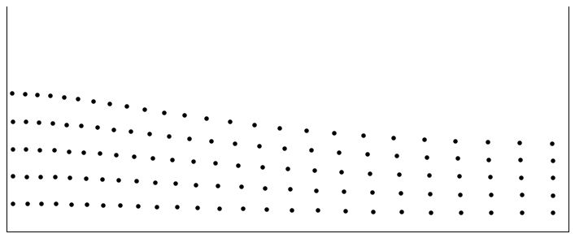
Ya conocemos las matemáticas del desplazamiento del agua seca. Antes de pasar a discutir la relación de dispersión, detengámonos a considerar qué aspecto tiene esto realmente. Imagine que colocamos en el agua una cuadrícula rectangular regular de puntos en equilibrio. Entonces, en la figura 11.22 mostramos qué aspecto tiene la cuadrícula en el modo (11.125) con . Cada uno de los pequeños rectángulos de la figura 11.22 era un cuadrado en la posición de equilibrio (cuando ). Nótese cómo funciona la incompresibilidad: cuando el agua se comprime en una dirección, se estira en la otra. Puede verlo en movimiento en el programa 11-3.
Habiendo mirado esto, podemos olvidarlo un rato y concentrarnos solo en la superficie: eso es lo que importa para la relación de dispersión. Para facilitar la presentación en los diagramas siguientes, exageraremos el desplazamiento en la dirección vertical y olvidaremos el desplazamiento de la superficie en la dirección (que de todos modos no importará). Entonces la onda tiene el aspecto de la figura 11.23.
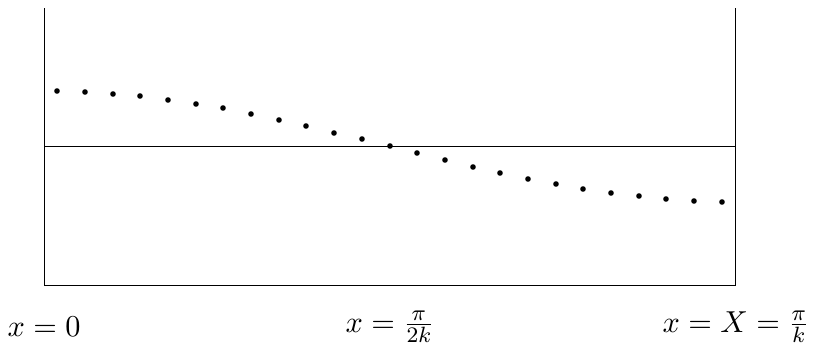
Usaremos argumentos energéticos para obtener la relación de dispersión. Hay tres contribuciones a la energía total de la onda estacionaria (11.125): la energía potencial gravitatoria, la energía almacenada en la tensión superficial y la energía cinética. Consideremos cada una por turno.
En el diagrama de la figura 11.24 puede verse que el efecto global de los desplazamientos en el modo (11.125) es tomar un trozo de agua de , elevarlo (el desplazamiento vertical de la superficie) y llevarlo a . El volumen de ese trozo es , donde es la longitud del trozo y es la anchura en la dirección (hacia dentro del papel). Así, el potencial gravitatorio total es
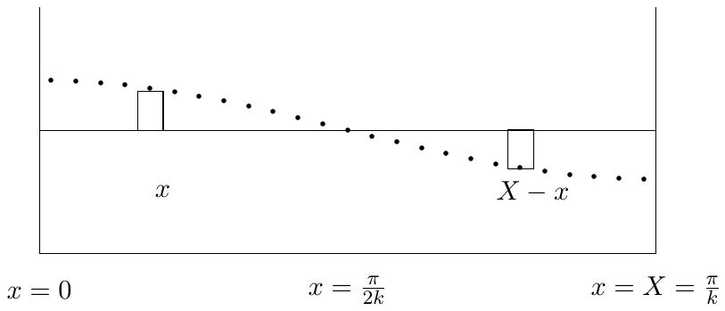
La energía almacenada en la tensión superficial es multiplicada por la diferencia entre la longitud de la superficie y la longitud de equilibrio (). Esto exige que tengamos algo de cuidado con la posición de la superficie, volviendo a (11.109). La posición de la superficie es
La longitud es entonces
Pero
Así,
El término de orden de (11.131) se cancela al integrar en , de modo que
La energía cinética se obtiene integrando sobre todo el volumen del líquido:
El total de (11.127)-(11.135) es
Esto debe ser constante en el tiempo, lo que implica
donde es la «tangente hiperbólica», definida por
Nótese que, en el doble límite de longitud de onda larga y agua poco profunda, las ondas en el agua se vuelven no dispersivas: para y , y
La relación de dispersión (11.137) implica una competición entre la gravedad y la tensión superficial. Para longitudes de onda largas domina la gravedad y el término es el más importante. Para longitudes de onda cortas domina la tensión superficial y el término es el más importante. El cruce ocurre para números de onda del orden de
La longitud de onda de cruce es en realidad una distancia familiar. Hay un proceso mucho más familiar que implica una competición similar entre gravedad y tensión superficial. Considere una gota de agua sobre una superficie de baja fricción, como una sartén de teflón. Una gota muy pequeña es casi esférica. Pero al aumentar el tamaño de la gota, empieza a aplanarse. Y cuando la gota crece por encima de un tamaño crítico, la altura de la gota deja de aumentar: se extiende con una altura fija, , como se muestra en sección en la figura 11.25.
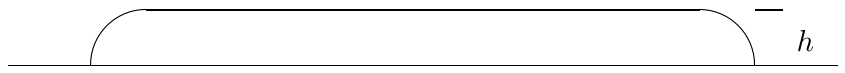
Como con la relación de dispersión, podemos entender lo que ocurre considerando la energía. La energía total de la gota es la suma de la energía potencial gravitatoria y la energía debida a la tensión superficial:
donde es el volumen de la gota, y
El volumen es fijo, así que el valor de equilibrio de minimiza la suma
El mínimo ocurre para
La tensión superficial medida del agua es dinas/cm. Esto da la altura familiar de una gota de agua, cm. Esta altura está relacionada con por
La idea de la óptica geométrica es entender los efectos de la refracción y la reflexión sobre haces de luz, ignorando los efectos de la difracción. En realidad, esto es solo la ley de Snell y geometría. Una aplicación de estas ideas será la discusión del arcoíris en la sección siguiente. Allí usaremos lo que se llama «trazado de rayos», que, como su nombre indica, consiste simplemente en seguir la pista de lo que hace cada rayo de luz al atravesar la gota. Una gota esférica es una «lente gruesa»: evidentemente, no tiene sentido considerar «delgada» una esfera. En esta sección vamos a ver cómo dar una descripción aproximada más sencilla de lo que hace una «lente delgada». De hecho, si estuviéramos diseñando un instrumento óptico de mucha precisión, seguiríamos usando el trazado de rayos para afinar los detalles. Pero el análisis de lente delgada es un buen punto de partida aproximado y nos ayudará a entender lo que ocurre en algunas situaciones importantes.
Técnicamente, lo que significa «delgada» en este contexto es que, si un haz estrecho de luz aproximadamente perpendicular al plano de la lente entra en la lente por algún punto de un lado, sale más o menos por el mismo punto del otro lado. Si ignoramos el pequeño cambio de posición, esto simplifica el análisis y nos da la fórmula de la lente delgada.
Antes en este capítulo dedujimos la fórmula del cambio angular de un haz estrecho de luz (estamos ignorando la difracción) debido a un prisma. El análisis usa la construcción geométrica de la figura 11.26 y da
donde la primera igualdad es exacta y la segunda se sigue en el límite en que los ángulos son pequeños. En ese límite, la desviación angular es independiente del ángulo de entrada.
Podemos usar este resultado para entender cómo enfoca la luz una lente. Una lente es un dispositivo en el que el cambio angular que se da al haz es proporcional a la distancia al eje, para ángulos y distancias pequeños:
donde es una longitud. Esto es aproximadamente cierto para un trozo de vidrio con superficies que son partes de esferas. En la figura 11.27 hay un diagrama que muestra cómo funciona esto para una lente que es plana por un lado y una porción de esfera de radio por el otro. En el diagrama, es el ángulo del «prisma efectivo» que ve la parte del haz que está a distancia del eje. Debería quedar claro por la figura que, si es pequeño, es proporcional a :
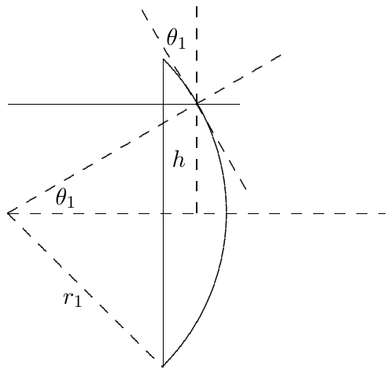
Más a menudo, la lente es curva por ambos lados. Si los radios son y , el resultado tiene el aspecto de la figura 11.28. La figura 11.28 muestra el haz justo en la punta de la lente por comodidad pero, como debería dejar claro el diagrama anterior, es el ángulo del «prisma efectivo» para cualquier . La figura exagera también la curvatura de los dos lados, de modo que la lente dibujada no es realmente «delgada»: una lente delgada de verdad tiene las caras mucho menos curvadas. Esto es importante porque, si la lente es gruesa, la altura no está muy bien definida: si la luz dentro de la lente no es horizontal, podríamos tener una donde la luz entra en la lente y una muy distinta donde sale. Pero si la lente es delgada y los rayos no están muy lejos de la perpendicular, esta ambigüedad en puede ignorarse igual que las demás correcciones a las relaciones de ángulos pequeños (como ).
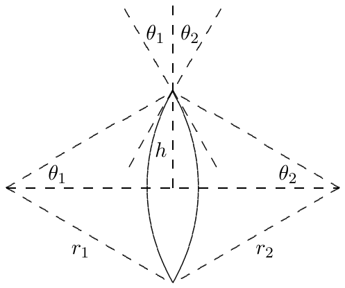
Juntando la geometría de la figura 11.28 con la fórmula de para un prisma, obtenemos la constante para una lente esférica delgada:
y, por tanto,
Esta es la llamada «fórmula del fabricante de lentes».
Una lente de este tipo enfoca los rayos paralelos de luz, como se muestra en la figura 11.30. Esto funciona porque , como se muestra en la figura 11.31. Los rayos paralelos con cualquier ángulo se enfocan sobre un «plano focal» a una distancia de la lente, como se muestra en la figura 11.32. La manera analítica de explicar cómo funciona esto es notar que la diferencia entre las pendientes de los rayos a ambos lados de la lente es proporcional a la altura. Así, en este caso, como las pendientes de un lado son las mismas, la diferencia de pendientes del otro lado es proporcional a la diferencia de alturas, y eso significa que todos convergen en la misma .
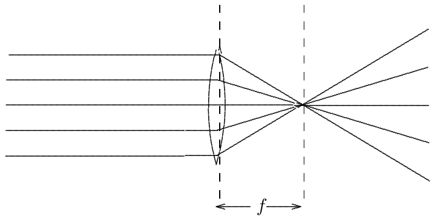
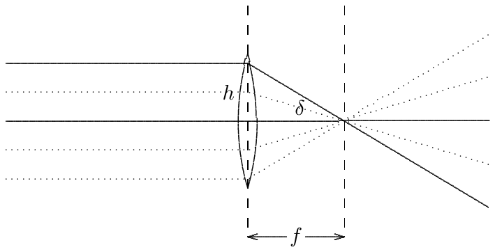
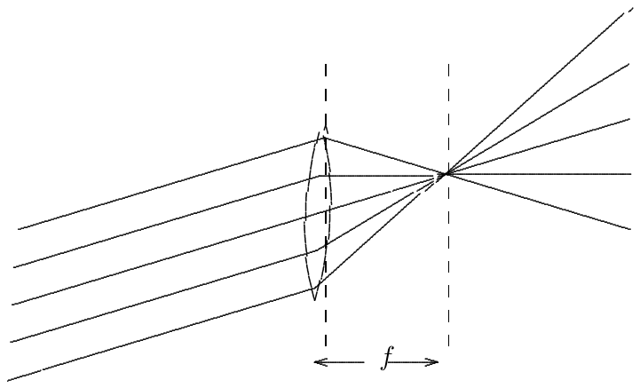
Otra forma de ver que este enfoque debe funcionar se ilustra en las figuras 11.33 y 11.34. Nótese que, si los rayos paralelos llegan con un ángulo , el rayo que está a una distancia por encima del centro de la lente se desvía hasta la horizontal, como se muestra en la figura 11.33 con la línea continua. Entonces, para los rayos a ambos lados de ese (mostrados con líneas discontinuas), como la dependencia de la desviación con la altura en la lente es lineal, la desviación angular total, , es multiplicada por la distancia total al centro, ; pero entonces , que es la condición de enfoque. Esto se ilustra en la figura 11.34.
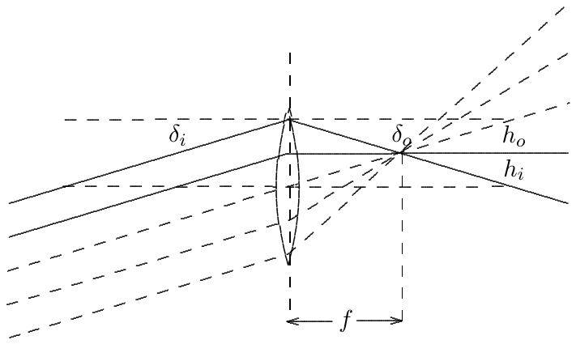
Para un haz de rayos paralelos con cualquier ángulo, puede determinar dónde inciden en el plano focal trazando cualquier rayo; el más fácil es el que pasa por el centro de la lente, que no se desvía en absoluto, como se muestra en la figura 11.35. Los rayos paralelos (una parte de una onda plana; sabemos que eso es imposible, pero estamos ignorando la difracción) pueden pensarse como procedentes de una fuente puntual en el infinito. Si hay una fuente puntual más cerca de la lente, esta enfoca más lejos. Ahora juegue con la animación LENS.EXE.
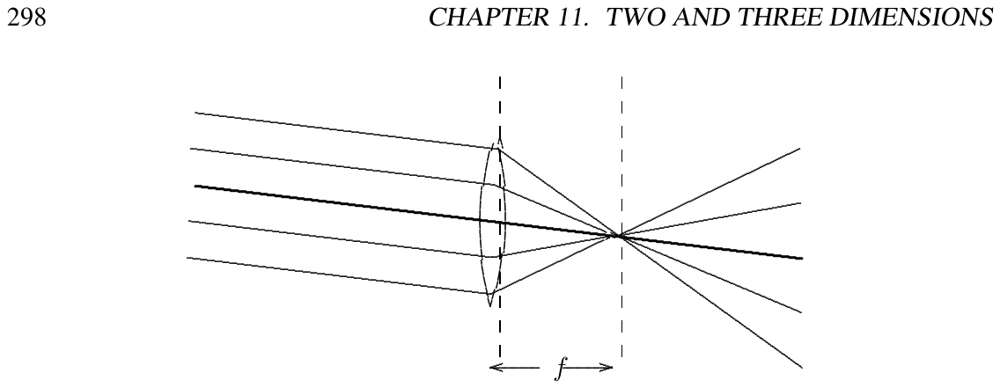
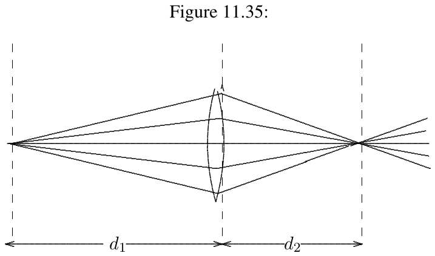
Para hallar la relación entre y , considere el diagrama de la figura 11.37: la suma de los ángulos de desviación a ambos lados es igual a :
lo que, para ángulos pequeños, equivale a
o
Esta es la llamada «fórmula de la lente delgada».
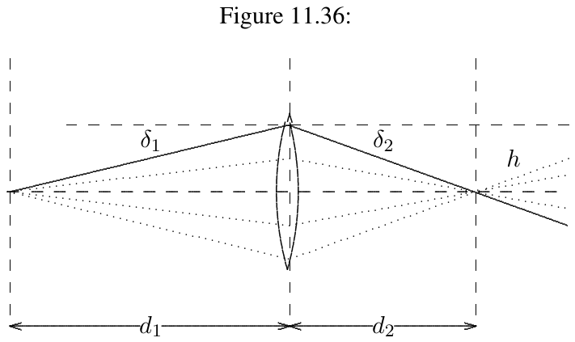
Hasta ahora hemos discutido lentes «convergentes» o «convexas», para las que es positiva, pero también hay lentes «divergentes» o «cóncavas», para las que es negativa. En ese caso, los rayos paralelos no se enfocan, sino que se desenfocan, y parecen divergir de un plano situado a una distancia (que es un número positivo) más allá de la lente, como se muestra en la figura 11.38. El punto del que divergen los rayos salientes se llama «imagen virtual». En este caso es una imagen virtual del punto en el infinito. En la figura 11.39 se muestra el efecto de una lente cóncava sobre una fuente puntual. De nuevo hay una imagen virtual. Aquí la fórmula de la lente delgada se sigue satisfaciendo, pero tanto como son negativas.
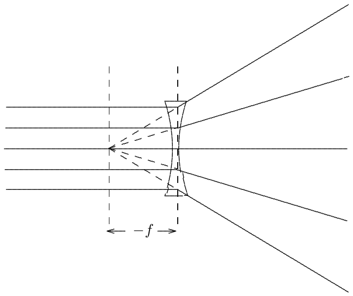
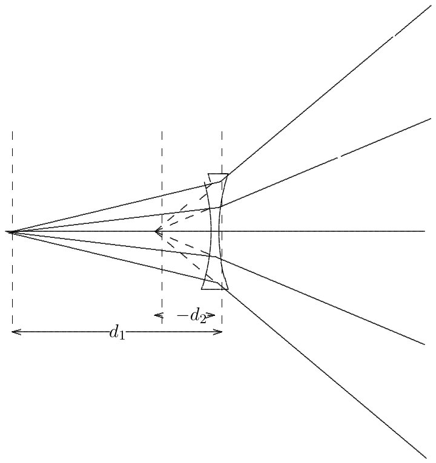
La propiedad de enfoque de una lente puede usarse para proyectar la imagen de un objeto sobre una superficie, como se muestra en la figura 11.40. Lo que ocurre es que la luz que se abre desde cada punto del objeto se vuelve a enfocar en un único punto de la pantalla. Como en las figuras 11.36 y 11.37, las distancias satisfacen la fórmula de la lente delgada,
Esto le dice dónde poner la pantalla. Nótese además que es fácil ver en qué punto de la pantalla aparece la imagen de un punto concreto del objeto, porque el rayo de luz que pasa justo por el centro de la lente no se desvía en absoluto (esto lo usamos también para los rayos paralelos, arriba de la figura 11.35). Esto, más geometría sencilla, implica que la razón entre el tamaño de la imagen y el del objeto es :
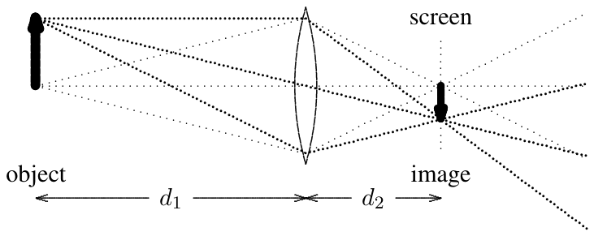
Si se retira la pantalla de la figura 11.40, puede verse que la luz a la derecha de donde estaba la pantalla es una copia de la luz que viene del objeto, pero al revés y con el tamaño cambiado en . Si ha jugado con lentes, ya lo sabe.
Nótese que (11.153) implica que ni ni pueden ser menores que . Si acerca demasiado el objeto a la lente, no obtiene una imagen real al otro lado. En su lugar, se hace negativa y se obtiene una «imagen virtual» al mismo lado de la lente que el objeto, y la luz a la derecha de la lente diverge como si viniera de la imagen virtual. Esta situación se ilustra en la figura 11.41. Como discutiremos más abajo, así es como funciona una lupa.
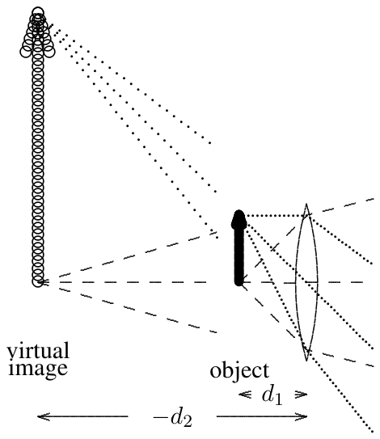
La formación de imágenes ilustrada en la figura 11.40 es lo que ocurre en una cámara y en su propio globo ocular. La lente enfoca la luz de puntos exteriores sobre puntos de la película, o de su retina. Por supuesto, la retina no es realmente un plano. Por la misma razón, el cristalino de su ojo no es una lente esférica, sino de una forma más complicada. El trazado de rayos lo ha hecho la evolución, sin embargo, de modo que los objetos en un plano se enfocan correctamente sobre la retina.
Como la distancia del cristalino a la retina está fijada por la geometría de su ojo, usted debe poder ajustar la forma del cristalino. Al hacerlo, puede cambiar la distancia focal de su cristalino y, con ella, la distancia a la que los puntos están perfectamente enfocados (esto se llama «acomodación»).
La formación de una imagen en la retina se ilustra en el diagrama de la figura 11.42. De nuevo, como en la figura 11.40, la imagen está invertida. No puede enfocar objetos demasiado cercanos al cristalino porque la cantidad de acomodación que puede hacer es limitada. Si acerca el objeto más de la distancia focal más pequeña que su cristalino puede producir, la imagen real queda más allá de la retina y el objeto se verá borroso, como se muestra en la figura 11.43.
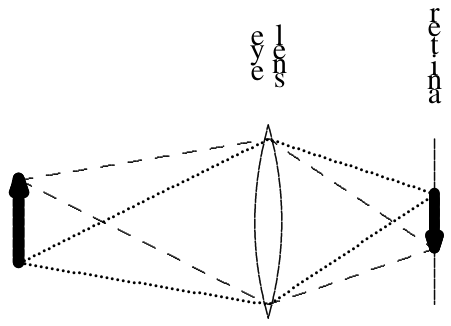
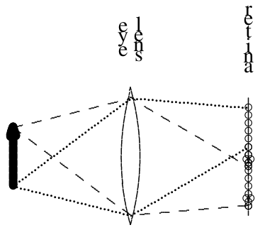
Una lupa funciona permitiéndole producir una imagen mayor del objeto sobre su retina. Lo hace de dos maneras, ambas ilustradas en el diagrama de la figura 11.44 (con menos rayos dibujados ahora, porque los diagramas se están volviendo demasiado recargados).
Obviamente, la imagen es mayor. Pero nótese además que la lupa cambia la cantidad de acomodación que su cristalino necesita. Su ojo está enfocando en realidad la imagen virtual, que está mucho más lejos, y eso es más fácil. Así, cuando mira un objeto con una lupa puede acercárselo mucho más al ojo de lo que podría sin ella. Esto aumenta aún más el efecto de aumento, porque los objetos más cercanos se ven más grandes. En este diagrama puede verse también un tercer efecto beneficioso de la lupa: llega más luz del objeto a su ojo.
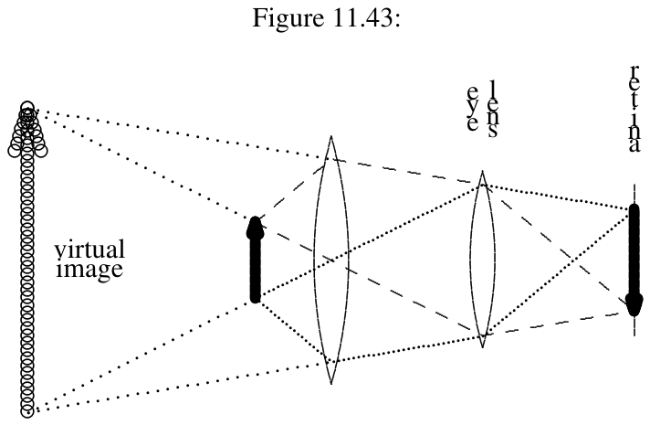
Uno de los efectos de aumento de una lente puede obtenerse sin lente de una manera muy sencilla: con un agujero de alfiler. Si mira un objeto cercano a través de un agujero de alfiler, puede acercárselo mucho más al ojo. La razón es que solo pasa un haz estrecho de luz por el agujero desde cada punto del objeto que mira, así que no hace falta mucho enfoque. El tamaño de la imagen en su retina no aumenta cuando mira el objeto a través de un agujero de alfiler a la misma distancia que sin él pero, con el agujero, puede acercárselo mucho más al ojo sin que se vea borroso y, por tanto, hacer que parezca más grande.
Puede que también haya jugado con cámaras estenopeicas, en las que se forma una imagen sobre una pantalla dentro de una caja oscura sin lente, como se muestra en la figura 11.45.
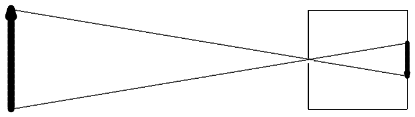
Una desventaja de la cámara estenopeica es que hace falta un objeto muy brillante: se desecha la mayor parte de la luz que viene del objeto. Puede conseguir más luz haciendo el agujero más grande, pero eso hace la imagen más borrosa. En realidad, sin embargo, tampoco puede hacer el agujero demasiado pequeño. En última instancia, como veremos en el capítulo 13, la difracción limita la resolución de una cámara estenopeica. Si intenta hacer la imagen muy nítida haciendo el agujero muy diminuto, el haz que obtiene dentro de la cámara se ensancha por difracción. Lo mejor que puede hacer es elegir el tamaño del agujero de modo que el ensanchamiento en la pantalla por difracción iguale justo el tamaño del agujero.
Ya que estamos, nótese que la difracción y el tamaño finito de su pupila limitan la resolución angular de su ojo. Como entenderemos en detalle en el capítulo 13, el tamaño finito de su pupila introduce una dispersión angular del orden de para luz de longitud de onda . A menos que tenga ojos enormes, es menor que 0.25 cm, así que para luz verde de longitud de onda 500 nanómetros (550 está aproximadamente en mitad del espectro visible), la resolución angular es mayor que unos . A una distancia de 10 metros, por ejemplo, incluso si sus ojos son perfectos, no será capaz de resolver dos objetos separados menos de unos pocos milímetros.
Puede usar un agujero de alfiler para estudiar sus ojos de maneras bastante interesantes. Ponga el agujero cerca del ojo y mire una fuente de luz difusa y brillante. Lo haremos en clase, pero puede fabricarse su propio agujero perforando un pequeño orificio en una lámina de papel de aluminio con un alfiler y probarlo. Si lleva gafas, quíteselas: no las necesitará. Debería ver una mancha circular de luz. Es la imagen de su pupila sobre la retina, como se muestra en la figura 11.46.
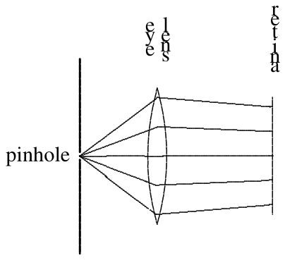
Puede ver cómo cambia el tamaño de su pupila con este montaje. Basta con que tape o cierre el otro ojo: como ahora recibe menos luz, ambas pupilas se dilatarán. Destape el otro ojo, mire de nuevo la luz brillante y las pupilas se contraerán. ¿Nota un pequeño retardo temporal?
Ahora acerque con cuidado la punta de un bolígrafo o un lápiz desde abajo, entre el agujero y su ojo, hasta que justo empiece a tapar la vista. ¿Qué ve? Esto debería convencerle, si no estaba seguro, de que la imagen en su retina está invertida, como se muestra en la figura 11.47. Falta la mitad inferior de la imagen en su retina. Su cerebro, acostumbrado a ver las imágenes de la retina invertidas, ¡lo interpreta como un objeto que baja desde arriba!
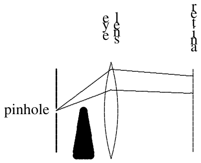
Combinando lentes de diversas maneras se pueden construir todo tipo de instrumentos ópticos interesantes. La manera más sencilla de pensar en el aumento es considerar el tamaño angular de la imagen observada, comparado con el tamaño angular que se vería sin el instrumento.
En la figura 11.48 se ilustra un telescopio sencillo. Las distancias están algo distorsionadas: en un telescopio real, el objeto estaría mucho más lejos y los tamaños de las lentes serían mucho menores. Cuando mira un objeto lejano (con grande) con su telescopio, la luz llega a la primera lente (el «objetivo») como un haz de rayos casi paralelos. Sabemos, por la fórmula de la lente delgada,
con , que se forma una imagen real a una distancia del objetivo apenas mayor que su distancia focal . El «ocular» se coloca entonces a una distancia apenas mayor que su distancia focal, , de la imagen real, para convertir de nuevo la luz de la imagen en un haz casi paralelo. Esencialmente, lo que hace con el ocular es mirar la luz de la imagen real con una lupa.
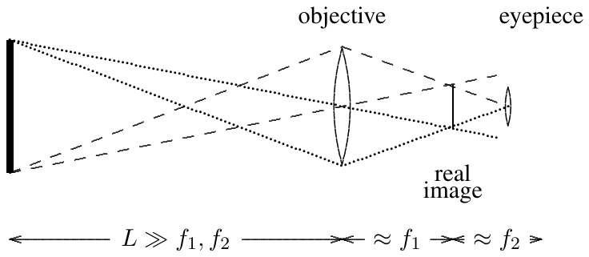
Podemos entender cómo (y cuánto) aumenta un telescopio los objetos lejanos mirando los ángulos implicados. Si el objeto tiene tamaño , su tamaño angular sin el telescopio es
Por triángulos semejantes, el tamaño de la imagen real es
y por tanto el tamaño angular de la imagen real en el ocular (y en su ojo) es
Así, el aumento es aproximadamente
Nótese que la imagen del telescopio aparece invertida, porque lo que está viendo en realidad es la imagen real.
Un microscopio tiene un aspecto parecido al de la figura 11.49 (con aún menos rayos dibujados, porque a estas alturas ya debería estar acostumbrado a ellos).
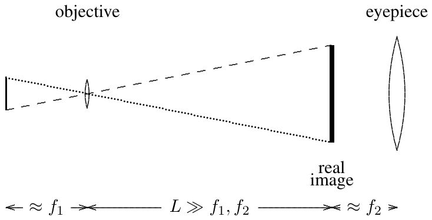
La muestra se coloca un poco más allá de la distancia focal, , del objetivo, de modo que se forma una imagen real mucho mayor que la muestra. Después se mira la imagen real con el ocular como si fuera una lupa, colocado de nuevo un poco más allá de su distancia focal, , para poder ver la imagen cómodamente con los ojos relajados. Si la muestra tiene tamaño , el tamaño de la imagen real es
y el tamaño angular de la imagen en el ocular (y en su ojo) es
Esto debe compararse con el tamaño angular del objeto a alguna distancia de referencia, cm, a la que puede ver el objeto cómodamente a simple vista, que es
Así, el aumento es
La mayoría de los libros de física elemental o no explican el arcoíris, o lo explican incorrectamente (a veces de forma embarazosa). Obviamente, tiene algo que ver con la refracción de la luz por las gotas de lluvia. Deberíamos poder explicarlo solo con la ley de Snell y la óptica geométrica —trazado de rayos—. Pero es un poco sutil, como verá.
Para empezar, considere la refracción de un rayo estrecho de luz por una gota esférica de agua, ilustrada en la figura 11.50. El índice de refracción del agua, , varía de unos 1.332 para la luz roja a unos 1.343 para la violeta. El rayo entra en algún punto de la gota, que podemos parametrizar por el ángulo entre la dirección de la luz incidente y el radio que va del centro de la gota al punto por donde entra la luz. El ángulo es también el ángulo entre el rayo de luz y la perpendicular a la superficie de la gota, así que es el apropiado para usar en la ley de Snell. Por tanto, el ángulo del rayo refractado dentro de la gota viene dado por
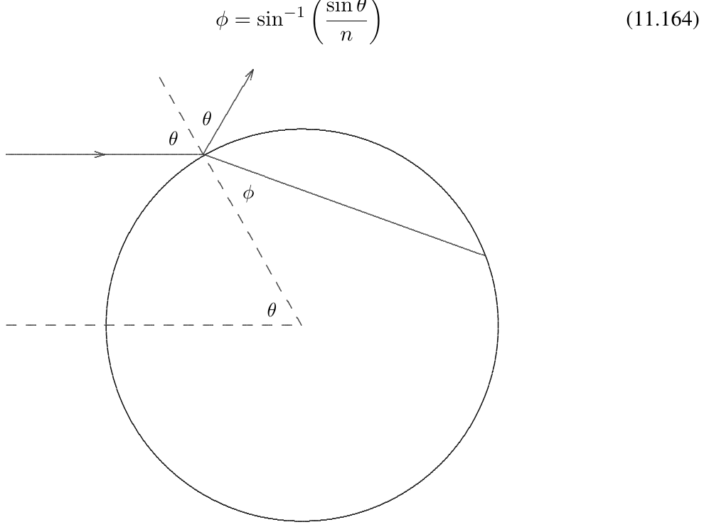
Parte de la luz también se refleja en la gota. Nótese que la luz reflejada se refleja especularmente. Para , la luz se refleja directamente hacia atrás. Al aumentar desde 0, el rayo reflejado gira en sentido antihorario respecto del rayo incidente un ángulo , hasta que en apenas roza la esfera y no gira nada.
El hecho geométrico importante que hace el problema bastante sencillo es que el ángulo entre el rayo y la perpendicular a la superficie es el mismo cuando sale de la gota que cuando entra. La ley de Snell funciona a la inversa, y el rayo que sale de la gota forma un ángulo con la perpendicular. Como puede verse en la figura 11.51, esto significa que el rayo refractado que sale de la gota es simplemente una versión del rayo reflejado de la figura 11.50 girada . Eso significa que está girado
respecto de la dirección original de la luz incidente.
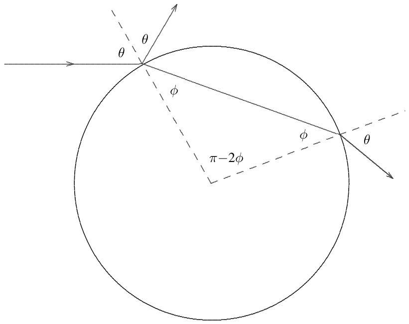
El problema con esto es que no tiene nada que ver con el arcoíris. El problema es que la dirección del rayo refractado es básicamente hacia delante y depende de , de modo que no se destaca ningún valor concreto de . Hay tres cosas misteriosas del arcoíris que este efecto no puede explicar:
el arcoíris primario ocurre a un ángulo definido;
el ángulo es en la dirección hacia atrás —a un ángulo de unos 41° (unos 0.7 radianes) del rayo de luz incidente, es decir, girado unos 2.4 radianes respecto de la dirección original—; y
hay un segundo arcoíris fuera del primero, ¡en el que los colores van en orden opuesto!
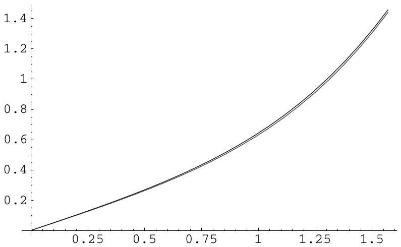
Entonces, ¿qué hace esta refracción? La respuesta es: ¡casi nada! El rayo refractado se reparte sobre un amplio rango de ángulos, como se muestra en la gráfica de la figura 11.52. A un ángulo de salida cualquiera, la luz de este efecto es muy tenue y apenas se nota. No solo los colores no se separan mucho, sino que además todos se reparten de forma más o menos uniforme sobre el ángulo de salida, de modo que no se ve ningún arcoíris por esta refracción.
Entonces, ¿de dónde viene el arcoíris? La respuesta es que, además de refractarse en la superficie interior de la gota, el rayo también puede reflejarse y salir después a un ángulo todavía mayor. El resultado tiene el aspecto de la figura 11.53.
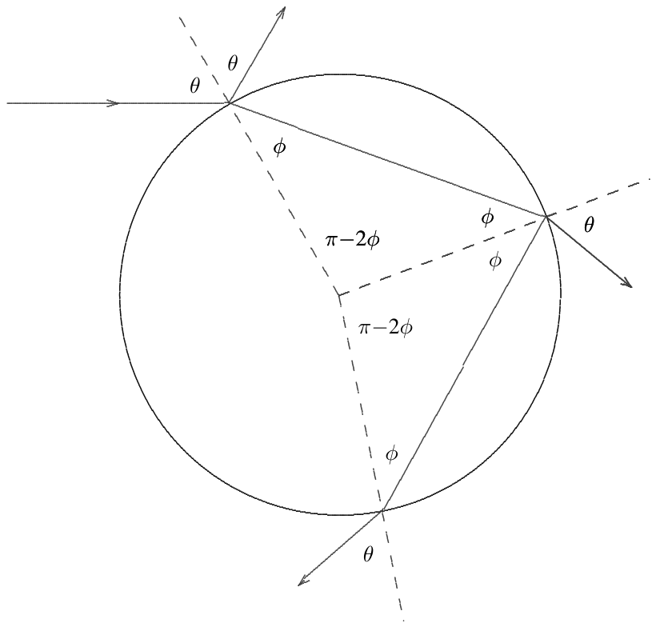
Comparando la figura 11.51, la figura 11.53 y la ecuación (11.165), está claro que en este camino la luz gira
Y aquí está el punto crítico. Si representamos este frente a , ¡la gráfica tiene un mínimo! Esto se muestra en la figura 11.54.
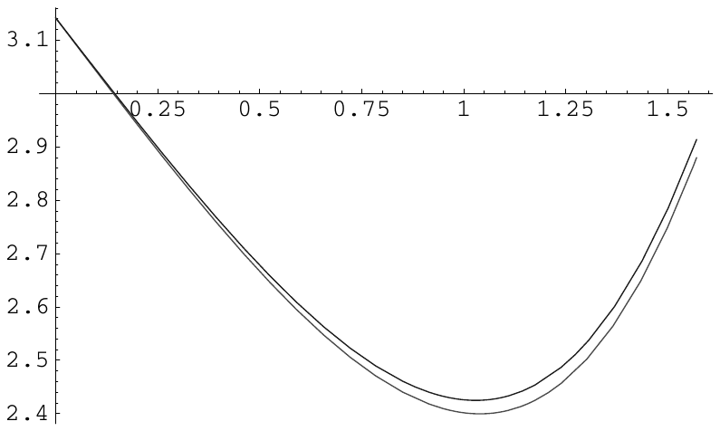
Ahora el ángulo de salida tiene un mínimo para (que es el valor de ilustrado en los diagramas). El ángulo de salida correspondiente a ese da la posición angular del arcoíris. Aquí, como no cambia mucho ante un cambio pequeño de , se ve la suma de la luz refractada procedente de un rango de alrededor del mínimo. El ángulo es aproximadamente el que esperamos: , donde 0.7 radianes ≈ 41° es el ángulo entre el vector que va de la gota al Sol y el que va de esa misma gota a su ojo, como se muestra en la figura 11.55. El signo negativo de significa que la luz no ha girado 180° completos, así que la luz que llega a su ojo entró en la gota refractante por el lado más alejado de usted.
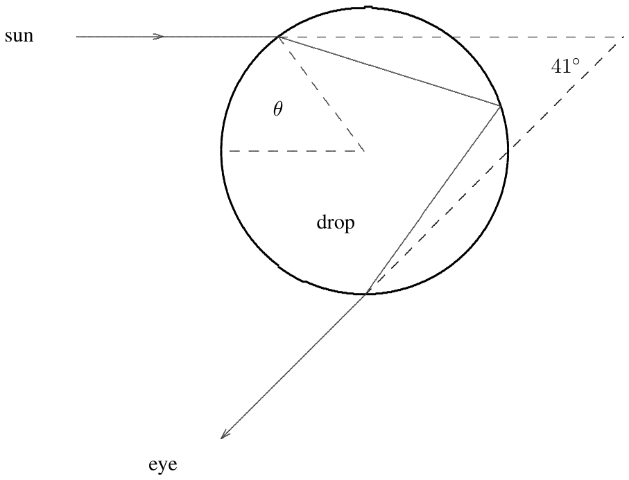
También puede verse en la gráfica de la figura 11.54 que los colores están separados. La luz roja está en el exterior (más lejos de ) y la azul en el interior.
Matemáticamente, ¿por qué se acumula la luz en el borde? La energía de la luz solar que cae sobre una parte pequeña de la superficie de la gota entre y es proporcional a (hay otros factores, como , pero varían lentamente, así que olvidémoslos). El ángulo del rayo saliente, , es una función de , y la energía se reparte sobre una región angular entre y . Así, la intensidad saliente es proporcional a
¡Cuando , la intensidad se va a infinito! El borde es infinitamente más brillante que el interior. ¡Por eso lo vemos!
Podemos comprobar ahora esta imagen viendo cómo explica el segundo arcoíris. Como cabe suponer, procede de una reflexión más, como se muestra en la figura 11.56.
Ahora el rayo de luz gira
Esto se muestra, junto con , en la gráfica de la figura 11.57. El mínimo de es la posición del segundo arcoíris. Pero ahora, como el ángulo es mayor que , la luz llega a su ojo por el lado de la gota que está más cerca de usted, y está doblándose completamente alrededor.
Por eso los colores están invertidos. De nuevo, el azul se refracta más, pero esta vez eso significa que el azul queda en el exterior, mientras que el rojo queda en el interior.
Por casualidad, los mínimos de y están desplazados de casi lo mismo (dentro de unos 0.13 radianes), aunque en lados opuestos. Por eso los dos arcoíris están bastante juntos en el cielo.
Otra predicción de esta imagen que puede verse a menudo es la «banda oscura de Alejandro», que aparece entre los arcoíris. La luz que no se concentra en el valor mínimo de se reparte dentro del primer arcoíris pero fuera del segundo; así, la región entre los dos arcoíris (o fuera del primero, si el segundo no se ve) es más oscura. Si representamos la distancia angular respecto de en función del ángulo con el que la luz solar entra en la gota, el primer y el segundo arcoíris tienen el aspecto de la figura 11.58 (como de costumbre, he exagerado la diferencia de índice de refracción entre el rojo y el azul). Aquí se ve claramente que el ángulo del primer arcoíris es menor, y la banda oscura entre los dos.
Considere ondas sonoras en una sala muy grande con paredes absorbentes. En el centro de la sala (tomaremos el centro como origen de nuestro sistema de coordenadas, ) hay un altavoz esférico, una esfera que produce en su superficie (de radio ) una presión oscilante de la forma . ¿Qué tipo de ondas sonoras se producen? Parece bastante tonto usar nuestras soluciones de onda plana con invariancia bajo traslación espacial para este problema, porque el sistema tiene simetría bajo rotaciones alrededor del origen. En su lugar, miremos directamente la ecuación de ondas y aprovechemos la naturaleza esférica del problema. Es decir, supongamos que la solución tiene la forma . Sustituyendo esto en la ecuación de ondas se obtiene
Podemos reescribir esto de la siguiente forma útil:
Así, satisface la ecuación de ondas unidimensional.
Ahora podemos resolver el problema que planteamos arriba. Las soluciones para tienen la forma y , donde . Como la presión en es , nos interesan las combinaciones y . Estas describen ondas que salen del origen y que van hacia él, respectivamente. La condición de contorno apropiada en el infinito es tomar la onda saliente, de modo que la perturbación la produzca enteramente el altavoz. Así,
Las características generales de la solución (11.174) son fáciles de entender. Los frentes de onda, a lo largo de los cuales la fase de oscilación es constante, son esferas centradas en el origen, como debe ser por la simetría rotacional. Las ondas se alejan del origen con velocidad . Al alejarse, su intensidad local debe disminuir, porque la misma cantidad de energía se reparte sobre un área mayor. Esa es la razón del de (11.174). Si la amplitud cae como , la intensidad de la onda cae como , como debe ser. Aunque la física está clara, la forma precisa de esta solución es engañosamente sencilla. En dos dimensiones, por ejemplo, no es posible hallar una solución de un problema análogo usando las funciones que conoce del instituto. En dos dimensiones, la amplitud de la onda debe decrecer aproximadamente como . Las soluciones de la ecuación de ondas bidimensional con esa propiedad se llaman funciones de Bessel. Aprenderá sobre ellas en cursos más avanzados.
Ahora debería ser capaz de:
Interpretar las ondas planas en el espacio de dos y tres dimensiones en términos de un vector , el número de onda angular;
Analizar la dispersión de una onda plana en un contorno plano entre regiones con relaciones de dispersión distintas;
Deducir y usar la ley de Snell;
Comprender el fenómeno de la reflexión total interna, junto con el enunciado general de la condición de contorno en el infinito para complejo;
Comprender la física y las matemáticas de los fenómenos de efecto túnel;
Comprender cómo afecta la degeneración de las frecuencias de los modos normales al problema de la oscilación forzada, y hallar los patrones de arena en placas de Chladni cuadradas;
Comprender la propagación de ondas en guías de onda, usando la separación de variables para construir los modos e interpretar el resultado en términos de ondas en zigzag;
Ser capaz de analizar las ondas en el agua, ignorando la viscosidad y el momento angular;
Resolver problemas con ondas esféricas donde el desplazamiento solo depende de y .
11.1. Considere las oscilaciones transversales libres de la cuerda bidimensional con cuentas mostrada en la figura 11.59. Todas las cuerdas horizontales tienen tensión , todas las verticales tienen tensión , y todos los círculos macizos son cuentas de masa . El marco cuadrado está fijo en el plano .
a. Halle los modos normales y sus frecuencias correspondientes.
b. Suponga que . Dibuje nueve diagramas, uno para cada modo normal, en orden de frecuencia creciente, indicando qué cuentas se mueven hacia arriba (con un signo ), cuáles hacia abajo (con un signo ) y cuáles no se mueven (con un 0). Puede intercambiar y y seguir teniendo la respuesta correcta, cambiando el origen de tiempos o multiplicando su vector de modo normal por . Haga el resto y ponga el orden correcto. Debería poder hacerlo incluso si se lió con los detalles del apartado a.
11.2. Considere las oscilaciones transversales forzadas de la cuerda bidimensional con cuentas mostrada en la figura 11.60. Todas las cuerdas tienen tensión y todos los círculos macizos son cuentas de masa . El marco se mantiene fijo en el plano . Los círculos huecos se mueven arriba y abajo fuera del plano del papel con el mismo desplazamiento transversal,
donde
Halle el desplazamiento de cada una de las cuentas. Puede hacerlo resolviendo para el desplazamiento de la cuenta cuya posición horizontal es , , para todos los y relevantes. Todos los desplazamientos serán proporcionales a , así que escriba su respuesta en forma de tabla de los coeficientes de para cada y .
11.3. Considere las oscilaciones transversales forzadas de la cuerda bidimensional semiinfinita con cuentas mostrada en la figura 11.61. Todas las cuerdas tienen tensión , todos los círculos macizos son cuentas de masa y las separaciones de equilibrio de los bloques son todas . El marco en e se mantiene fijo en el plano . Los círculos huecos en se mueven arriba y abajo fuera del plano del papel con desplazamiento transversal
para los valores de dados abajo. Para cada , halle el desplazamiento de cada cuenta en función de su posición de equilibrio. Es decir, determine . Suponga que todo el sistema oscila con frecuencia y que el desplazamiento se comporta bien en .
a. Halle para .
b. Halle para .
En ambos casos suponga que es un número real pequeño, lo bastante pequeño como para poder aproximar .
11.4. Una membrana flexible con tensión superficial y densidad superficial de masa está tensada de modo que su posición de equilibrio es el plano . Unida a la superficie de la membrana en hay una cuerda con tensión y densidad lineal de masa . Considere una onda viajera en la membrana con desplazamiento transversal
para , y
para .
¿En qué dirección viaja la onda reflejada (para )? ¡Fácil!
La ley de Newton para un elemento pequeño de la cuerda de longitud con posición de equilibrio es
Explique el significado físico del término proporcional a . ¿Qué tira de qué? ¿Por qué tiene la forma mostrada?
11.5. Considere las oscilaciones transversales de una membrana flexible infinita tensada en el plano con tensión superficial y densidad superficial de masa . A lo largo de la línea , , hay una cuerda de densidad lineal de masa , pero sin tensión propia, unida a la membrana.
Considere una onda de la forma
donde y .
Halle en términos de (¡TRIVIAL!).
Halle y . Pista: considere para un trozo infinitesimal de la cuerda cargada, recordando que no tiene tensión propia.
11.6. Dos membranas flexibles semiinfinitas están tensadas en el plano . La primera tiene tensión superficial 1 dina/cm y densidad de masa 169 g/cm². Está fijada a lo largo de los ejes , y , , y se extiende de a en la dirección . La segunda tiene la misma tensión superficial pero densidad de masa 180 g/cm². También está fijada a lo largo de los ejes , y , , y se extiende de a en la dirección . Las dos membranas están unidas con cinta adhesiva sin masa en . Considere las oscilaciones transversales de este sistema de la forma
donde cm y s.
Halle y . Halle y .
11.7. Una membrana uniforme está tensada en el plano , como se muestra en la figura 11.62. Está unida a varillas fijas a lo largo de , e , , desde hasta . es el desplazamiento del punto de la membrana cuya posición de equilibrio es . Para oscilaciones pequeñas, satisface la ecuación de ondas bidimensional,
Si este sistema se extiende a un sistema infinito continuándolo a negativa, muestre que los modos normales del sistema infinito toman la forma
Halle . Suponga que el extremo de la membrana en se excita como sigue:
La condición de contorno en es tal que no hay onda viajando en la dirección a lo largo de la membrana. Halle .
Explique la siguiente afirmación: para , el sistema actúa como un portador de ondas unidimensional con la relación de dispersión . ¿Cuánto vale ?
11.8. Considere una cáscara esférica rígida de radio interior llena de gas en el que la velocidad del sonido es . En esta esfera hay modos normales de onda estacionaria de muchos tipos. Nos interesarán aquellos en los que la presión depende solo de la distancia al centro de la esfera. Suponga que es la diferencia entre la presión del gas en tal modo y la presión de equilibrio. Sabemos de (11.173) que satisface la ecuación de ondas unidimensional.
Explique la física de la condición de contorno en .
En términos de un número de onda desconocido , halle una forma de que satisfaga la condición de contorno en .
Explique la física de la condición de contorno en .
Escriba el enunciado matemático de la condición de contorno en , cuyas soluciones dan los valores permitidos de para los modos normales.
Pistas: recuerde que es , y no , la diferencia física de presión. El modo no trivial más bajo tiene un valor de que satisface .
11.9. Considere un contorno entre dos membranas semiinfinitas tensadas en el plano -. La membrana para tiene tensión superficial y densidad superficial de masa . La membrana para tiene la misma tensión superficial pero densidad superficial de masa distinta, . A lo largo del contorno hay un dispositivo (no sé exactamente cómo funciona) que produce una fuerza de fricción vertical proporcional a menos la velocidad vertical de la membrana en el contorno. Dicho de otro modo, si es el desplazamiento de la membrana en función de , la fuerza (en la dirección ) sobre un trocito del contorno que va del punto al es
En la membrana hay una onda plana de la forma siguiente:
para , y
para . El montaje se muestra en la figura 11.64.
Halle . Halle . Halle . Debería obtener para ; explique por qué.
11.10. En vez de un océano abierto, considere un sistema con un fondo en y una tapa fija en , medio lleno de agua y medio lleno de disolvente de pintura, otro fluido casi incompresible más ligero que el agua, que flota en la mitad superior sin mezclarse con ella.
Muestre que las ondas de este sistema tienen la forma de (11.122) para (en el agua) y
para (en el disolvente), argumentando que (11.175) y (11.122) satisfacen las condiciones de contorno apropiadas en y y (para desplazamientos pequeños) en , y muestre que (11.175), como (11.125), es coherente con la incompresibilidad ().
Muestre que es discontinua en y explique físicamente qué está ocurriendo en ese contorno y por qué. Cuando lo haya hecho, mire el programa 11-4, en el que se anima este sistema. Si mira con atención, notará el efecto de la ruptura de la linealidad para desplazamientos grandes.
Suponga ahora que los líquidos están contenidos entre paredes verticales en y . ¿Qué condiciones de contorno se satisfacen en los contornos verticales?
Halle la forma de los desplazamientos de los modos normales de este sistema.
Muestre que la relación de dispersión de este sistema es
donde es la densidad del disolvente, la del agua y la tensión superficial del contorno entre el agua y el disolvente. Pista: use un argumento energético análogo a (11.127)-(11.137) y discuta simplemente cómo cambian las distintas contribuciones al pasar de (11.137) a (11.176).
11.11. Considere la reflexión de ondas sonoras en una membrana sin masa e infinitamente flexible que separa dos gases con la misma presión de equilibrio, , pero densidades distintas. La membrana está en el plano . El gas de la región 1, para , tiene densidad de equilibrio , razón entre el calor específico a presión constante y a volumen constante , y velocidad del sonido ; el gas de la región 2, para , tiene densidad , razón de calores específicos y velocidad del sonido . Una onda de presión en el sistema tiene la forma
en la región 1, para , y
en la región 2, para , donde es la presión del gas cuya posición de equilibrio es . La presión pequeña describe la amplitud de la onda de presión. y son los coeficientes de reflexión y transmisión. Los vectores son
donde , , , , y son todos positivos.
Halle y en términos de y .
Halle y en términos de y .
Muestre que si hay un valor crítico de por encima del cual la onda se refleja totalmente, y halle el ángulo crítico.
Para hallar y necesitamos las condiciones de contorno en . Una se sigue del hecho de que la membrana no tiene masa y es infinitamente flexible: eso implica que no puede haber fuerza sobre ella transversal a su superficie. Halle esta condición de contorno. Pista: ¿de dónde viene la fuerza transversal a la superficie?
La otra condición implica el desplazamiento transversal de la membrana. El desplazamiento puede obtenerse de la presión:
donde es el desplazamiento del gas cuya posición de equilibrio es y es la etiqueta de la región. Halle la otra condición de contorno. Pista: suponga que la amplitud es pequeña. Halle y .
11.12. Considere un universo lleno de un material con conductividad no nula, . Es decir, en ese material hay una corriente proporcional al campo eléctrico (ley de Ohm),
Supondremos que el material no tiene ninguna otra propiedad eléctrica —en particular, que no hay polarización ni magnetización— y que no se acumula carga en ningún sitio, de modo que . Considere la propagación de una onda plana electromagnética en este universo. Como este universo es perfectamente invariante bajo traslación espacial y bajo rotaciones, y como (11.177) es lineal, cabría esperar que hubiera soluciones de onda plana en las que los campos eléctrico y magnético fueran proporcionales a para y relacionados por alguna relación de dispersión. En particular, considere la propagación en la dirección con el campo eléctrico en la dirección y el magnético en la .
a. Muestre, a partir de las ecuaciones de Maxwell relevantes, que tal onda plana puede existir si
b. Suponga que es real y positiva y que la parte real de es positiva. Halle el signo de la parte imaginaria de e interprete físicamente su resultado. Es decir, explique por qué el signo tenía que salir como salió.
11.13. Considere una onda sonora esférica que llega desde muy lejos y es absorbida completamente por un amortiguador de sonido esférico de radio , como se muestra en la figura 11.65. La presión en este sistema se describe mediante la parte real de la onda viajera compleja siguiente, que depende solo del radio y del tiempo:
a. Halle la potencia promediada en el tiempo absorbida por el amortiguador esférico en .
b. Explique cualitativamente el factor de la presión.
Suponga ahora que hay un contorno esférico sin masa y flexible entre dos gases distintos, de radio , mostrado como el círculo discontinuo del diagrama de la figura 11.66. La presión de equilibrio, , es la misma a ambos lados del contorno. Suponga también que es el mismo para los dos gases y que la única diferencia son las densidades: dentro la densidad es y fuera es . Ahora, para , la presión sigue viniendo dada como antes, pero en la región exterior al círculo discontinuo hay una onda reflejada además de la incidente.
c. ¿Cuáles son las condiciones de contorno en y por qué?
d. Halle y en el límite , en el que se pueden despreciar los términos proporcionales a frente a o .
11.14. Uno de los problemas de las lentes de vidrio es que el índice de refracción del vidrio depende de la frecuencia. Así, según la fórmula del fabricante de lentes, la distancia focal de una lente de vidrio dependerá de la frecuencia, y eso no es bueno, porque si un color queda bien enfocado, los demás quedarán borrosos. Esto se llama «aberración cromática». Afortunadamente, distintos tipos de vidrio se comportan de manera distinta a este respecto, y eso hace posible eliminar la aberración cromática. Suponga que fabrica una lente pegando lentes de dos tipos de vidrio, con radios y . Suponga que los índices de refracción de los dos vidrios son
¿Qué relación debe satisfacerse para que la lente compuesta tenga una distancia focal independiente de ?
11.15. También se puede hacer un telescopio con una lente convergente (el objetivo) y una divergente (el ocular). La distancia focal de la lente convexa es y la de la cóncava es .
a. Si el trazado de rayos funciona como se muestra, es decir, si los rayos paralelos que entran en el objetivo salen paralelos del ocular, halle la distancia entre las dos lentes.
b. Calcule el aumento suponiendo que mira un objeto lejano que subtiende un tamaño angular . Considere después un rayo con ángulo que pasa por el centro de la lente convexa. Calculando por dónde pasa por la lente cóncava, debería poder determinar su ángulo, , cuando llega al ojo del observador. El aumento es entonces . ¿Cuánto vale en términos de las distancias focales?
c. En este caso la imagen sale derecha. Dibuje un diagrama cuidadoso para explicar por qué.
11.16. El aspecto de los arcoíris depende de forma espectacular del índice de refracción del agua. Describa en detalle qué aspecto tendrían los arcoíris si disminuyera en 0.03 para cada frecuencia de la luz. Discuta el primer y el segundo arcoíris y la banda oscura de Alejandro.
MIT OpenCourseWare https://ocw.mit.edu
8.03SC Physics III: Vibrations and Waves Otoño de 2016
Para obtener información sobre cómo citar estos materiales o sobre nuestras condiciones de uso, visite: https://ocw.mit.edu/terms.
¡Aquí hay una simetría en juego! Los modos en los que el vector está alineado con los ejes o son los que se comportan de forma sencilla bajo reflexiones a través del centro del rectángulo.↩︎
Hemos definido aquí para facilitar la discusión de las condiciones de contorno, más abajo.↩︎
Nótese que es la masa del electrón, y no la del protón, la relevante, porque los electrones se mueven mucho más en los campos eléctricos.↩︎
El contorno no cambia del fotón, por la invariancia bajo traslación en la dirección . Sin embargo, no hay ninguna razón por la que el contorno no pueda ejercer una fuerza en la dirección y cambiar del fotón.↩︎
Hay también modos proporcionales a y/o , pero se anulan en el origen y no son excitados por la fuerza impulsora.↩︎
Aquí podemos tomar adimensional y dejar que el parámetro sea un desplazamiento pequeño.↩︎
Nótese, sin embargo, que para grande la incompresibilidad es la restricción no lineal (11.111).↩︎